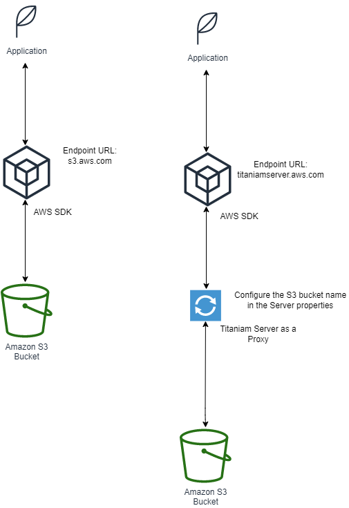
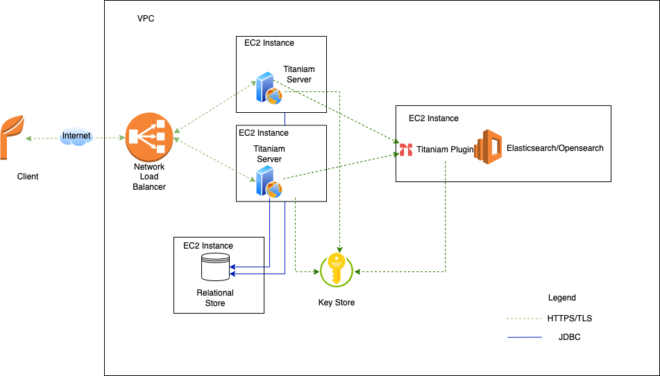
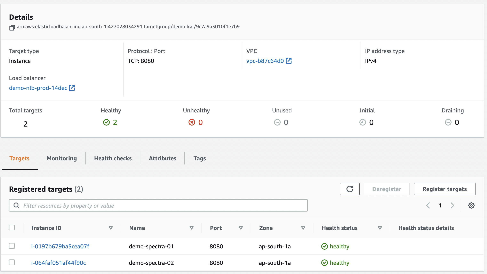

What’s New
This section describes the changes in the product for each release version.
What’s New in Build 2.3.7
Vault Tokens: Added the following fields in the
/v1/mgmt/key_rotation/latest/statusAPI response:elaped_time_secsspecifies in seconds since the master task (such as scheduling key rotation, or swapping of aliases ) was initiated.records_per_secspecifies the number of records that are processed per second.notespecifies the reason thetotalorcompletedfields read 0.
These two fields let you estimate the progress in terms of time and number of records processed for each of the key rotation tasks.
Vault Tokens: Updated the
successandcreatedfields toprocessedin the/v1/mgmt/key_rotation/latest/statusAPI response.Vault Collections: The following release_name related endpoints are introduced.
New Endpoint |
Replaces |
|---|---|
|
|
What’s New in Build 2.3.6
Data Protection Service: Enabled the Data Protection service for object stores. This data protection service lets you encrypt objects in place in the object store and also generates an encoded URI to the objects. You can use this URI to download the objects in clear text. In this release, the AWS S3 object store is supported.
Added the
sdss.data.protection.enabledproperty to enable data protection on object stores. For more information, see Step 2: Configure Service: Data Protection Service for Object Store.The following endpoints are enabled with the data protection service:
Translation Service: The following Translation Service APIs are deprecated:
/keyword/tangle /keyword/untangle /date/tangle /date/untangle /text/tangle /text/untangle /keyword2/tangle /keyword2/untangle /fpe/encrypt /fpenumber/encrypt /fpe/decrypt /fpenumber/decrypt /integer/tangle /integer/untangle /ip/tangle /ip/untangle
What’s New in Build 2.3.5
Added the following body parameters to the Continue Elasticsearch Tasks, and Rerun endpoints:
number_of_shardsnumber_of_replicas
For more information, see Configure Elasticsearch Index Settings for Vault.
What’s New in Build 2.3.4
Added the following body parameters to the Schedule key rotation, Continue Elasticsearch Tasks, and Rerun endpoints:
reindex_slicesreindex_batch_sizereindex_scroll_timeout_mins
For more information, see Configure Elasticsearch ReIndex Settings for Vault.
Added the following deployment-time Titaniam properties to support Elasticsearch reindex configuration settings:
"sdss.es.reindex.slices": “<value>”,"sdss.es.reindex.batch_size": <value>,"sdss.es.reindex.scroll_timeout_mins": <value>,
For more information, see Configure Elasticsearch ReIndex Settings for Vault.
The default value of the verbose query parameter is updated to
falsefor the following Translation Service endpoints:v2/ff1_alphanumeric/encryptv2/ff1_alphanumeric/decryptv2/ff1_alphanumeric_no_tweak/encryptv2/ff1_alphanumeric_no_tweak/decryptv2/ff1_numeric/encryptv2/ff1_numeric/decryptv2/ff1_numeric_no_tweak/encryptv2/ff1_numeric_no_tweak/decryptv2/ff1_printable_ascii/encryptv2/ff1_printable_ascii/decrypt
What’s New in Build 2.3.1
If the Titaniam Vault or database service is restarted during a database key rotation operation, you can now resume the database operations after the services are available. For more information, see Continue Database Tasks.
If any Elasticsearch errors occur during an Elasticsearch key rotation operation, you can now resume the Elasticsearch operations. For more information, see Continue Elasticsearch Tasks.
What’s New in Build 2.3.0
Added the following body parameters to the Schedule Key Rotation (Vault Token) endpoint:
number_of_shardsnumber_of_replicas
Added the following deployment-time Titaniam properties to support Elasticsearch index settings for shards and replicas:
"sdss.es.number_of_shards": "2","sdss.es.number_of_replicas": "2","sdss.store.elapsed.millis": "true",For more information, see Configure Elasticsearch Index Settings for Vault.
Improved the performance of the bulk store (
{{secureStoreURL}}/v2/secure/store/bulk) and bulk retrieve ({{secureStoreURL}}/v2/secure/retrieve/bulk) endpoints. These endpoints now internally make a single request instead of multiple requests to the Elasticsearch.Added the
sdss.store.elapsed.millisproperty. When you use this property during Titaniam Server deployment, the API response for bulk store endpoint returns the following headers:X-tn-es-lookup-millisX-tn-db-millisX-tn-es-millisX-tn-total-time-millis
For more information, see Include Time Taken for Ingestion in API Response Headers.
Added the following endpoint to support UDT translation in Titaniam Translation Service:
What’s New in Build 2.2.1
Added support for a prefix in AWS Secrets: You can now specify this property in the
docker-compose.ymlfile. When you thetitaniam.secrets.prefixproperty, the secret name must be of the format<prefix>titaniam_key_ring/<keyring_name>/<INDEX_NAME>for data encryption key,<prefix>titaniam.licensefor the Titaniam license, and<prefix>titaniam_key_ring/<department>/titaniam_key_encryption_keyfor the master key.Added support for master keys in AWS. You can now add your master key as a secret in AWS. The master key must be of the format:
<prefix>titaniam_key_ring/<department>/titaniam_key_encryption_keyortitaniam_key_ring/<department>/titaniam_key_encryption_key. When you use this feature, ensure that you also use an encrypted data encryption key in AWS.
Updates to Translation Service:
Added the following endpoints to support UDT translation in Titaniam Translation Service.
Added support for length validation in UDT endpoints. You must now pass
max_lengthandmin_lengthfields in the UDT definition.Added support for the format type
ff1_printable_ascii_no_tweakin the UDT definition.When using the
printable_asciicharacter set in an UDT defintion, the formatting_characters are stripped before encryption.The
startandendfields in an UDT definition are now used after stripping the formatting characters.
Added integrity checks on the
encryption_keytables in the datastores. This support is to prevent the following scenarios:Changing the encryption key material for an active encryption key
Removing an encryption key from the key store
Added an optional property
sdss.encryption-keys.check-integrity. You must set this property totrueto enable the integrity checks onencryption_keytables during Titaniam Server startup.
Upgrading to Build 2.2.1
In build 2.2.1, integrity checks are added on encryption_key tables in the datastore. So, you must alter your tables in the datastore before upgrading your Titaniam Server installation to version 2.2.1.
Run the following commands on your datastore:
MariabDB:
alter table encryption_key add column IF NOT EXISTS digest varchar(255)
alter table encryption_key add column disabled boolean default false
postgres:
alter table encryption_key add column IF NOT EXISTS digest varchar (255)
alter table encryption_key add column disabled boolean default false
Introduction
Titaniam Server is a Java application that can be configured as one of the following modules:
Titaniam Encrypted Analytical Vault (referred as Vault in this document) is a NoSQL datastore. Store your most valuable data and conduct full-featured search analytics while keeping the data encrypted at all times.
Titaniam Translation Service allows you to encrypt/ decrypt a variety of data (structured, unstructured, binaries). This product can be used to secure sensitive data or to translate data released from other Titaniam products.
Titaniam Proxy for Object store (referred to as Proxy in this document) allows you to protect an object store.
Titaniam Elasticsearch Proxy allows you to protect an Elasticsearch node.
Product Matrix
The following table maps the installer components to Titaniam products. For your chosen product, you must install and configure the components marked as “Yes”.
Component |
Vault |
Proxy |
Translation Service |
Elasticsearch Proxy |
Titaniam Server |
Yes |
Yes |
Yes |
Yes |
Relational Store |
Yes |
Yes |
Yes |
Yes |
Titaniam Plugin (Secure Search Engine) |
Yes |
No |
No |
Yes |
Key Store |
Yes |
Yes |
Yes |
Yes |
Where,
Relational Store is a database that Titaniam Server uses to store metadata and data.
Titaniam Plugin helps secure sensitive data stored in Elasticsearch using a patent-pending proprietary Data Entangling algorithm.
Key Store is typically a cental key store. You can use the key store to manage license, encryption keys, and Titaniam Server properties.
Planning your Installation
This section covers the following:
Layouts: Install the Titaniam Server in a proof-of-concept (POC) layout or a production layout
Installation Methods: How the Titaniam Server and its components are packaged.
Layouts
The Titaniam Server components can be installed in one of two layouts.
POC Layout
Production Layout
POC Layout
You must install all components to run Titaniam Server on a single machine or VM in a POC layout. However, only one instance of each component is installed; therefore, there is no built-in redundancy. The POC layout is suitable for development, functional evaluation, QA, and so on. However, this layout is not ideal for running production environments. And it is also not a realistic setup for performance testing or benchmarking. If the purpose of standing up this is to integrate with an external secret store, an external secret store is required. You do not have to integrate an external secret store for all other usages. A local solution is available.
Production Layout
In this layout, each component is installed with a minimum redundancy of two nodes with a load balancer where necessary. The layout is suitable for production installation and performance testing. Although an external secret management integration is still optional for performance testing, it is required for production usage. Both Vault nodes and Search nodes can scale horizontally. Vault nodes can be set up to scale automatically based on load characteristics (see here. You have to scale up and down the Search nodes manually.
Platform Support Matrix
Titaniam server uses and integrates with several third-party products and offerings. This section outlines the supported distributions and versions of such third-party components.
Software Requirements
Host Operating System (for Titaniam Server)
CentOS 8.x (Recommended)
Ubuntu 20.04 LTS+
RHEL
Primary Relational Store (You could use an RDS service)
Postgres 13.4 (Recommended)
MySQL 8.0.22 or higher
MariaDB 10.7
Titaniam Plugin (Secure Search Engine) for Advanced Analytical Vault installation
Elasticsearch 7.9.3+
OpenDistro for HTTPS
Kibana for querying Elasticsearch
External Key Store (for reading Encryption Keys)
AWS Secrets Manager
Load Balancer
Elastic network load balancer
Docker and Docker compose for installing Titaniam Server (see Install Docker and Docker Compose)
If deploying on a Kubernetes cluster, you need
kubectl. You must already have deployed a Kubernetes cluster.Java version jdk-8u351 to compile keys and rekeying
Hardware Requirements
Titaniam Server Host Machine
t2.2xlarge with EBS GP SSD Volume
Primary Relational Store
AWS db.t3.xlarge
RDS Provisioned IOPS as needed
Titaniam Plugin (Secure Search Engine) Host Machine
t2.2xlarge with EBS GP SSD Volume
Port Number Requirements
This section describes the ports that the Titaniam products use. You must ensure that these ports are available and opened before the installation.
Port Type |
Port Number |
Description |
Titaniam Server |
80 or 443 |
Access Titaniam Server at this HTTPS port. You must expose this port to the internet |
Elasticsearch REST API |
9200 |
Titaniam Server accesses the search engine on this HTTPS port. Need OpenDistro plugin to enable HTTPS. |
Elastic transport port |
9300 |
Elasticsearch inter-node communication happens on this port. |
Relational Database |
3306 or 5432 |
Titaniam Server accesses the relational data store using secure JDBC. MariaDB uses 3306 and Postgres uses 5432 |
Encrypted key store |
443 |
Titaniam Server accesses external keystore using HTTPS. |
Kibana |
5601 |
Kibana is used to query Elasticsearch. This port is needed only if you are evaluating Vault or Elasticsearch Proxy. |
Roles
The virtual machine where you run the Titaniam Server must have access to the Secrets Manager. Obtain an IAM Role with policy SecretsManagerReadWrite. This role allows the Titaniam Server to read and write to AWS Secrets Manager.
If you are using the Titaniam Proxy for the S3 object store, ensure that the virtual machine where you run the Titaniam Server has full access to the S3 object store.
POC Installation with Secrets in Local File System
You must install all components required to run Titaniam Server on a single machine or VM in a POC layout. However, only one instance of each component is installed, and therefore there is no built-in redundancy. The POC layout is suitable for development, functional evaluation, QA, and so on. However, this layout is not ideal for running production environments. And it is also not a realistic setup for performance testing or benchmarking. This POC layout includes:
Supplying license, encryption keys, and application properties using a local file system.
Titaniam Server Artifacts
You will need the following artifacts:
Docker Compose template (Copy from docker-compose.yml)
Titaniam Properties File (Copy from Titaniam Properties)
Keyring.json (see Generate an Encrypted Data Encryption Key and Optionally a Master Key)
You will need to obtain the following from Titaniam Support:
License file and SHA Checksum
Titaniam docker images are available in a private repository in Docker Hub. You need an access token to download the images. Contact Titaniam support to get your access token.
Install Process
Store the following files on the local file system:
License
Titaniam Server application properties
Encryption keys
Install Titaniam Plugin, Kibana, Postgres, and Titaniam Server.
Configure Titaniam Server as one of the following services:
Translation Service
Vault
Proxy for the object store
Elastic Proxy
Data Protection Service
Copy and modify the
docker-compose.ymlfile.Bring up the Titaniam Server service using
docker-compose.
Storing Titaniam License on Local File System
Store the license with the value provided by Titaniam on your virtual machine, for example, /home/centos/titaniam_config/license.
Example Titaniam License
The values provided here are just examples. Edit it to reflect the license file and SHA that you received from Titaniam Support. Occasionally the license file may include an expiry date. You can leave that in place. It does not affect the behavior.
{
"digest": "P9r7miQDNOf/0HWg8WQjBotJ79PP6WTw+0BQ9VT/fXQ=",
"license":"vwOraInV23PJ2ePSqHmsnULtSfi98AYO2NHJDCv3f39INv4c9xIGiry3fyW19iZ3nOpIb3QI2akOSg0I6/CZvweoozFtZnP3xqWWXL6t4hhCBNuCdpWGh3XCAVN2xXb5u8S55GjTeWs3IZz5JnHOTSPUCBunicy2TSPNmo/4ScNM7fQagyrqxsiQphq9hnU8vmngQ4E3udqIh086S++2ERk+nki/TDpMWpOxCVcf3ZdnVo+Ra+Tw01MIOxeM3PuRzFMAVJNyGb7BumDfmN6wOlnzpXoVKkDSfQwD1pwkpJcMpKcX8uJMmPo0fJ022w3j0bjMsHy/buMeUybRSdjYUzrIrNosrjDJtoCgel8ygOrscUf9HnJFIziRSd2wCzNpyZyJFUKWhV7LHATPigmeXoHHqWlND0f5YECdvlqLdZXnZllYxuv/xOAIPKzjSyN+GeESmoQavFTNL14XGSKw6Xz825iBdyRJkGW/JsYClBemBRQelgkoxerBTyq80CcSmaie5UdblYuMwTXr13sySWJbX7VdKMKoReRGun+vphHBQnTDPIagb1AiYnsOjSMYdK03SZvGjuujzwRwgn23m9pBJL3iaGTP+1cTrqN/b6FijTsAzxU55Ny3YbQ54f4zM7g0lk0wZepPtPpTG3hx6D83StcNaXRxRx5u3YB5ET8="
}
Storing Application Properties and Service Definitions
Create a titaniam.properties file with the properties and store it at a location on your EC2 instance.
Storing Encryption Keys in Local File System
Storing Encrypted Data Keys: Includes a master key (also called as Key Encryption Key, KEK) and one or more data encryption keys. The data encryption keys are encoded using the master key before adding them to the keyring.json file. You can select one of the data encryption keys as an active key.
Storing encryption keys involves the following steps:
Generate a master key and an encrypted data encryption key. See Generate an Encrypted Data Encryption Key and Optionally a Master Key.
Create a Keyring.JSON file and update the
keyring.jsonfile with the output of the previous step.Store the
keyring.JSONfile on your EC2 instance.Update the
docker-compose.ymlfile to mount thekeyring.JSONfile as a volume.
Installing Titaniam Services
This section explains the overall process to install all Titaniam Server services, Titaniam plugin and Postgres.
Installation Procedure
Following is the process to install all Titaniam services and the datastore Postgres.
Install docker and docker-compose. See Install Docker and Docker Compose. Ignore this step if you have already installed docker and docker compose.
Create the following folders on your virtual machine. These folders are required by Postgres and Titaniam Plugin and Kibana to store data.
sudo mkdir /var/lib/postgresql/13/main sudo mkdir /var/lib/arcusdata sudo mkdir /var/lib/kibanadata
Ensure that that user that installs Titaniam Server has ownership and write access to the folders from the previous step. Do the following:
sudo chown -R 1000:1000 /var/lib/postgresql/13/main sudo chown -R 1000:1000 /var/lib/arcusdata sudo chown -R 1000:1000 /var/lib/kibanadata
Copy this Titaniam Properties file, and modify the following properties if you want to use the S3 proxy service and the data protection service. This example Titaniam.properties file enables all other Titaniam services.
amazon.s3.region=<bucket-name> amazon.s3.access-key=<encrypted_access_key_id> amazon.s3.secret-key=<encrypted_secret_access_key>
Where,
amazon.s3.access-keyandamazon.s3.secret-keyare the access credentials for AWS S3. Ensure that you encrypt these using the zero-day encryption service. See Zero-day Encryption Service.amazon.s3.bucket-nameis the default S3 bucket name.
Copy this docker-compose.yml file, and modify the location of license and data encryption key.
In the
arcussectionVolumes: - <location of titaniam licence>:/usr/local/titaniam/license - <location of keyring.json>:/usr/local/titaniam/keyring.json
In the
spectrasection, specify the Titaniam Server image version and location of license, data encryption key, and properties file.image: titaniam/spectra:<version> Volumes: - <location of titaniam licence>:/usr/local/titaniam/license - <location of titaniam.properties file>:/usr/local/granger/application.properties - <location of keyring.json>:/usr/local/titaniam/keyring.json
Login to the docker registry:
docker login
At the password prompt, enter the username and personal access token you received.
Bring up the Titaniam services with the respective
docker-compose.yml, run the following command with the Titaniam Server service:docker-compose up -d
To troubleshoot the bring up, open a separate terminal, and run the following command:
tail -f /var/log/granger/server.log
Create a security group the virtual machine hosting Titaniam Server and create inbound rules to allow traffic on the ports that you have assigned for Titaniam Server (8080). For more information, see this document.
Send the curl command from the terminal. This command retrieves the product version:
Request
curl --location --request GET 'http://3.6.94.214:8080/v1/mgmt/version'
Response
2.3.6_103
Advanced Configurations
If needed, you can customize the following properties:
Use a different datastore such as MariaDB or MYSQL or if you want to change the default username and password, see Integrating with the Data Store.
Disable or enable independent Titaniam Services, see Step 2: Configure Services
Configure additional properties related to Elasticsearch index, logging information, see Configure Additional Properties in titaniam.properties.
POC Installation with AWS Secrets Manager
This section describes how you can install all Titaniam Server components on a virtual machine.
Titaniam Server Artifacts
Obtain the following installation artifacts from Titaniam support:
Images:
Titaniam-Server
Search Engine with the Titaniam Plugin pre-installed
Docker Compose template
License file and SHA Checksum
Titaniam docker images are available in a private repository in Docker Hub. You need an access token to download the images. Contact Titaniam support to get your access token.
Install Process
Store the following as secrets:
License
Titaniam Server application properties
Encryption keys
Configure Titaniam Server as one of the following services:
Translation Service
Vault
Proxy for the object store
Elastic Proxy
Generate the
docker-compose.ymlfile.Bring up the Titaniam Server service using
docker-compose.
Step 1: Supplying Configuration Values and Keys using AWS Secrets Manager
Titaniam supports supplying all the application properties, licenses, and encryption keys through a secret entry in AWS Secrets Manager. The advantage of doing this is that you can maintain the configuration settings centrally instead of storing the settings in each server node.
Use this procedure (supplying_secrets) here to create the following new secrets:
Titaniam License (see Step 1.a: Content of titaniam.license secret)
Data Encryption keys (see Step 1.b: Store Encryption Keys)
Configuration properties (see Step 1.c: Create Configuration Settings)
Related Topics
Next Step: Step 2: Configure Services
Step 1.a: Content of titaniam.license secret
The following content can be copied and pasted as a secret named titaniam.license in the PlainText view.
The secret name can be of the following formats:
<prefix>titaniam.license.<prefix>is the value of the propertytitaniam.secrets.prefixfrom thedocker-compose.ymlfile.titaniam.licenseif you have not specified the propertytitaniam.secrets.prefix.
The values provided here are just examples. Edit it to reflect the license file and SHA that you received from Titaniam Support before you save the secret. Occasionally the license file may include an expiry date. You can leave that in place. It does not affect the behavior.
{
"digest": "P9r7miQDNOf/0HWg8WQjBotJ79PP6WTw+0BQ9VT/fXQ=",
"license":"vwOraInV23PJ2ePSqHmsnULtSfi98AYO2NHJDCv3f39INv4c9xIGiry3fyW19iZ3nOpIb3QI2akOSg0I6/CZvweoozFtZnP3xqWWXL6t4hhCBNuCdpWGh3XCAVN2xXb5u8S55GjTeWs3IZz5JnHOTSPUCBunicy2TSPNmo/4ScNM7fQagyrqxsiQphq9hnU8vmngQ4E3udqIh086S++2ERk+nki/TDpMWpOxCVcf3ZdnVo+Ra+Tw01MIOxeM3PuRzFMAVJNyGb7BumDfmN6wOlnzpXoVKkDSfQwD1pwkpJcMpKcX8uJMmPo0fJ022w3j0bjMsHy/buMeUybRSdjYUzrIrNosrjDJtoCgel8ygOrscUf9HnJFIziRSd2wCzNpyZyJFUKWhV7LHATPigmeXoHHqWlND0f5YECdvlqLdZXnZllYxuv/xOAIPKzjSyN+GeESmoQavFTNL14XGSKw6Xz825iBdyRJkGW/JsYClBemBRQelgkoxerBTyq80CcSmaie5UdblYuMwTXr13sySWJbX7VdKMKoReRGun+vphHBQnTDPIagb1AiYnsOjSMYdK03SZvGjuujzwRwgn23m9pBJL3iaGTP+1cTrqN/b6FijTsAzxU55Ny3YbQ54f4zM7g0lk0wZepPtPpTG3hx6D83StcNaXRxRx5u3YB5ET8="
}
Related Topics
supplying_secrets
Step 1.b: Store Encryption Keys
You have two options of using the data encryption keys.
Option 1, Storing Encrypted Data Keys: Includes a master key (also called as Key Encryption Key, KEK) and one or more data encryption keys. The data encryption keys are encoded using the master key before adding them to the AWS Secrets Manager. You can select one of the data encryption keys as an active key.
Generate an encrypted data encryption key and optionally a master key. If you have an existing master key, you can choose not to generate the master key. See Generate an Encrypted Data Encryption Key and Optionally a Master Key.
Store the master key as
<prefix>titaniam_key_ring/<department>/titaniam_key_encryption_keyortitaniam_key_ring/<department>/titaniam_key_encryption_key. This key is the master encryption key.Store the encrypted data key as a secret:
<prefix>titaniam_key_ring/<keyring_name>/<INDEX_NAME>ortitaniam_key_ring/<keyring_name>/<INDEX_NAME>.Titaniam Server uses only keys that have the
Activetag.
Option 2, Storing Plain Data Keys: Generate a data encryption key and store it as a Secret in the AWS Secrets Manager. You are not encrypting the data encryption key with a master key in this case. See Generate Keys.
Note
<prefix>is the string from the propertytitaniam.secrets.prefixin thedocker-compose.ymlfile. If you have not mentioned thetitaniam.secrets.prefixproperty, the secret name must be of the formattitaniam_key_ring/<keyring_name>/<INDEX_NAME>for data encryption key andtitaniam_key_ring/<department>/titaniam_key_encryption_keyfor master encryption key.titaniam_key_ringmust be entered as is. This is the namespace that Titaniam server looks for when loading the encryption keys.<keyring_name>is the name of the keyring. This name distinguishes different Titaniam installations. Decide a name for the Titaniam Server installation (for example production_finance, dev_sandbox).
Related Topics
supplying_secrets
Step 1.c: Create Configuration Settings
Populate the rest of the configuration settings in a secret.
Create a new secret called
titaniam.properties.Copy and paste the titaniam.properties Secret to the secret using PlainText view.
Edit the entries to reflect your installation reality. Pay attention to these specifically:
Save the secret.
Related Topics
supplying_secrets
Integrating with the Data Store
Titaniam Server uses a datastore to store the metadata and schema versions. After you install the Titaniam Server, you must ensure that the Titaniam Server can communicate with the data store.
Open the
titaniam.propertiesfile and edit the sections corresponding to the database you are using.(If using MySQL) Specify the following properties:
"spring.datasource.url": "jdbc:mysql:<database_URL>", "spring.datasource.username": "<username>", "spring.datasource.password": "<password>", "spring.datasource.driver-class-name": "com.mysql.cj.jdbc.Driver", "spring.jpa.properties.hibernate.format_sql": "true", "spring.jpa.properties.hibernate.dialect": "org.hibernate.dialect.MySQL57InnoDBDialect", "spring.datasource.hikari.minimumIdle": "5, "spring.jpa.hibernate.ddl-auto": "update"
(If using MariaDB) Specify the following properties:
"spring.datasource.url": "jdbc:mariadb:<database_URL>", "spring.datasource.username": "<username>", "spring.datasource.password": "<password>", "spring.datasource.driver-class-name": "org.mariadb.jdbc.Driver", "spring.jpa.properties.hibernate.format_sql": "true", "spring.jpa.properties.hibernate.dialect": "org.hibernate.dialect.MariaDB53Dialect", "spring.datasource.hikari.minimumIdle": "5, "spring.jpa.hibernate.ddl-auto": "update"
(If using PostgreSQL) Specify the following properties:
"spring.datasource.url": "jdbc:postgresql<database_URL>", "spring.datasource.username": "<username>", "spring.datasource.password": "<password>", "spring.datasource.driver-class-name": "org.postgresql.Driver", "spring.jpa.properties.hibernate.format_sql": "true", "spring.jpa.properties.hibernate.dialect": "org.hibernate.dialect.PostgreSQL10Dialect", "spring.datasource.hikari.minimumIdle": "5, "spring.jpa.hibernate.ddl-auto": "update"
Where,
<database_URL> is the URL (including the port) where you can access the database. For example:
(PostgresSQL)#spring.datasource.url=jdbc:postgresql://tlab1/titaniam_v1 (MySQL) #spring.datasource.url=jdbc:mysql://localhost:3306/testdb (MariaDB) #spring.datasource.url=jdbc:mariadb://localhost:3306/testdb
<username> is the username for accessing the database.
<password> is the password required to access the database.
Step 2: Configure Services
You can choose to configure Titaniam Server as one of the following services:
Translation Service
Vault
Proxy for the object store
Elastic Proxy
The following subsections describe the properties needed for each of the services:
Related Topics
Previous Step: Step 1: Supplying Configuration Values and Keys using AWS Secrets Manager
Next Step: Step 3: Compose the docker-compose.yml File
Step 2: Configure Service: Translation Service
You must set the following property in the docker-compose.yml file and disable the other services:
- panther.enabled=true
Related Topics
Step 2: Configure Service: Configure as a Vault
Enable the vault service. Set the following property in the docker-compose.yml file:
- sdv.enabled=true
Configure Secure Search Index
When you configure Titaniam Server as a vault, you must also configure a secure search index (Titaniam plugin integrated with Elasticsearch). You must configure the following:
Configure the following properties in the arcus: section of the docker_compose_yml file:
- aws_region=us-east-2 - titaniam.keyring.name=<keyring-name> - titaniam.store.type=aws - titaniam.aws.access.id=<AWS_ACCESS_ID> - titaniam.aws.secret.id=<AWS_SECRET_ID> - node.name=arcus01 - http.port=9200
Configure the following property in the
spectra:section of thedocker-compose.ymlfile:- spring.elasticsearch.rest.uris`: this property must match the IP and port of the elastic configured in the `arcus` section.
For example:
- spring.elasticsearch.rest.uris=http://arcus:9200
Related Topics
Step 2: Configure Service: Proxy for the S3 Object Store
You can use the Titaniam Server as an S3 proxy to protect any requests to an S3 bucket in the specified region. The following diagrams illustrate the configuration with and without the Titaniam Server as a proxy. When the Titaniam Server is configured as an proxy, it passes through the endpoint requests except the PUTObject and GETObject endpoints. These endpoints are intercepted by the Titaniam Proxy for S3 and the data is encrypted and decrypted.
Enable the proxy service. You must set the following property and disable other services in the docker-compose.yml file:
- ripple.enabled=true
- amazon.s3.bucket-name=[bucket_name]
- amazon.s3.access-key=[access_key_id]
- amazon.s3.secret-key=[secret_access_key]
Where,
* ``amazon.s3.access-key`` and ``amazon.s3.secret-key`` are the access credentials for AWS S3. Ensure that you encrypt these using the zero-day encryption service. See :ref:`zero-day-encrypt`.
* ``amazon.s3.bucket-name``=<bucket_name> is the S3 bucket name.
Configure your Application to Route Traffic to Titaniam S3 Proxy
In your application, you must override the existing endpoint URL. You must now point the endpoint URL to the Titaniam S3 Proxy.
If you are using AWS SDK V1, modify the endpoint URL as follows:
AmazonS3 s3 = AmazonS3ClientBuilder.standard()
.withEndpointConfiguration(new EndpointConfiguration(
"{{secureStoreURL}}/v2/titaniam-s3-proxy",
"region"))
.withCredentials(CREDENTIALS_PROVIDER)
.build();
Where, you {secureStoreURL}}/v2/titaniam-s3-proxy points to the Titaniam S3 Proxy URL.
If you are using AWS SDK V2, modify the endpoint URL as follows:
URI endpointOverride = new URI("{{secureStoreURL}}/v2/titaniam-s3-proxy");
S3Client.builder()
.credentialsProvider(CREDENTIALS_PROVIDER)
.endpointOverride(endpointOverride)
.region(region)
.build();
Where, you {secureStoreURL}}/v2/titaniam-s3-proxy points to the Titaniam S3 Proxy URL.
If you are using boto3, modify the endpoint URL during client creation as described here.
Related Topics
Step 2: Configure Service: Elastic Proxy
When you configure Titaniam Server as an elastic proxy, you must configure the following properties:
Create a folder on your virtual machine:
/var/lib/arcusdata.Enable the elastic proxy service. Disable the other services. Set the following property in the
docker-compose.ymlfile:- sdss.esproxy.enabled=true
Configure the location of the keys:
(Optional) If you are using the active key from the AWS Secrets Manager, Configure the following properties in the
arcus:section of thedocker-compose.ymlfile:- aws_region=us-east-2 - titaniam.keyring.name=vault-singlenode-byok - titaniam.store.type=aws - titaniam.aws.access.id=<AWS_ACCESS_ID> - titaniam.aws.secret.id=<AWS_SECRET_ID> - node.name=arcus01 - http.port=9200 - indices.query.bool.max_clause_count=2000
(Optional) If using byok (bring your own key) mode,
In your
docker-compose.ymlfile, configure the following lines of code in the arcus section:# byok configuration - titaniam.store.type=byok - titaniam.es.host=http://arcus:9200 - titaniam.byok.refresh-secs=30
In your docker-compose.yml file, configure the following lines of code in the spectra section:
# byok configuration - sdss.seed.store.type=byok - sdss.byok.host=http://arcus:9200 - sdss.byok.refresh-secs=30
Configure the following property in the
spectra:section of thedocker-compose.ymlfile:spring.elasticsearch.rest.uris=http://arcus:9200indicates the URL of the Titaniam plugin.(Optional)
sdss.es.login=adminindicates the admin login of the elastic node. This property is required only if you have installed Elasticsearch with authentication.(Optional)
sdss.es.passwordprovide the password after encrypting it with the master encryption key. This property is required only if you have installed Elasticsearch with authentication.sdss.search.proxy.override.fields.<INDEX_NAME>.<ABSOLUTE_FIELD_NAME>=<OVERRIDE_TYPE>specify any field properties in the elastic index that you want to override. For example, to return the values from the index as integers or boolean formats instead of strings. For example,
sdss.search.proxy.override.fields.example_index.days=integer sdss.search.proxy.override.fields.example_index.hours=integer
Related Topics
Step 2: Configure Service: Data Protection Service for Object Store
The Titaniam Server can be used as a data protection service for an object store. The data protection service for object stores lets you encrypt and decrypt objects in your object stores. Currently, AWS S3 is supported. This service lets you do the following operations:
Encrypt an object in-place in the object store. You must pass on the object reference to the data protection service.
Generate an encoded URI to an object. You can use this URI to download the object in clear format.
To enable the data-protection service, do the following:
(Configure at least one object store service) For example, If you are protecting objects in an AWS S3 object store, you must configure the Titaniam S3 proxy related properties (see _proxy_s3).
Set the following property file:
sdss.data.protection.enabled=true
Related Topics
Step 3: Compose the docker-compose.yml File
Specify the location of the encryption keys and titaniam.properties in the Secrets Manager in a docker-compose.yml file.
For examples of the docker-compose.yml files, see Appendix: Example Docker Compose YML Files and Property Files.
Set the following properties:
- sdss.properties-source=aws.sm - sdss.secretsmanager.properties.keyname=titaniam.properties - sdss.aws.sm.region=us-east-2 - sdss.aws.sm.keyring-name=<keyring-name> - sdss.seed.store.type=aws - sdss.aws.sm.access-key=<AWS_ACCESS_ID> - sdss.aws.sm.secret-key=<AWS_SECRET_ID> - titaniam.secrets.prefix=prefix
Where,
sdss.properties-sourceindicates that the configuration properties are stored in the AWS Secrets Manager.sdss.secretsmanager.properties.keynamespecifies the key name of the configuration properties file. This must be set totitaniam.properties.sdss.aws.sm.regionindicates the region of the AWS machines.sdss.aws.sm.keyring-nameindicates the <keyring_name> from the Secrets Manager. Secret name is of the format - titaniam_key_ring/<keyring_name>/<key_name>.sdss.seed.store.typespecifies that the keystore is in AWS.sdss.aws.sm.access-keyspecifies the encrypted access key required by Titaniam Server to access the Secrets Manager. Ensure that you specify the encrypted value. You can encrypt your client ID using the zero-day encryption (see Zero-day Encryption Service).sdss.aws.sm.secret-keyspecifies the encrypted secret key required by Titaniam Server to access the Secrets Manager. Ensure that you specify the encrypted value. You can encrypt your client ID using the zero-day encryption (see Zero-day Encryption Service).titaniam.secrets.prefixspecifies the prefix path to secrets in AWS Secrets Manager. For example if you have specifytitaniam.secrets.prefix=prefix1, you must store the titaniam.license in AWS Secrets as<prefix1>titaniam.licence. Encryptions keys as<prefix1>titaniam_key_ring/<keyring_name>/<INDEX_NAME>.
Related Topics
Previous Step: Step 2: Configure Services
Next Step: Step 4: Deploy Titaniam Server using Docker
Step 4: Deploy Titaniam Server using Docker
This section explains how to bring up the Titanaim Server service using docker.
Install Titaniam Server without Bringing up the Titaniam Services
If you are interested in pulling in the Titaniam Server docker image but not bringing up Titaniam Server, do the following as a root user:
docker pull titaniam/spectra:<version>
You must replace version with the actual version number. Contact Titaniam Support if needed.
Install Titaniam Server
As a root user, run the docker-compose image:
Login to the docker registry:
docker login
At the password prompt, enter the username and personal access token you received.
(Only if you are running the services as Vault or Elasticsearch proxy), bring up the Titaniam service with the plugin
docker-compose.ymlfile. Use the following commands:docker-compose up -d
Bring up the Titaniam Server service with the respective
docker-compose.yml, run the following command with the Titaniam Server service:docker-compose up -d
Post-Installation Steps
This chapter describes the following:
Accessing the Logs
Verifying the Installation
Logs
All logs are handled by the docker logs. See docker log documentation.
Run the following command tocheck logs for your container:
docker logs -f <container_name>
Verifying the Installation for Vault and Translation Services
Perform the following steps to verify that the installation is successful, send the following CURL request:
curl --location --request GET 'http:/<baseURL>:8080/actuator/health'
You must receive a response similar to the following:
{
"status": "UP",
"components": {
"db": {
"status": "UP",
"details": {
"database": "PostgreSQL",
"validationQuery": "isValid()"
}
},
"diskSpace": {
"status": "UP",
"details": {
"total": 53675536384,
"free": 7795793920,
"threshold": 10485760,
"exists": true
}
},
"ping": {
"status": "UP"
}
}
}
Production Installation Using Kubernetes
This section describes how you can deploy Titaniam Server using Kubernetes and Helm charts
Production Installation Instructions
This section explains the overall process to install Titaniam Server in a high-availability production environment. You can supply all the application properties, license, and encryption keys to Titaniam Server through a secret entry in a secrets manager.
Titaniam Server Artifacts
Obtain the following installation artifacts from Titaniam support:
License file and SHA Checksum
Access token to retrieve the Titaniam Server images are available in a private repository in Docker Hub. You need an access token to download the images. Contact Titaniam support to get your access token.
Prerequisites
Read this Platform Support Matrix.
Ensure that you are familiar with deployed a kubenetes cluster.
Ensure that the each node in your kubernetes cluster where you run Titaniam Server must have access to the Secrets Manager. Obtain an IAM Role with policy SecretsManagerReadWrite. This role allows the Titaniam Server to read and write to AWS Secrets Manager.
kubectlto deploy Titaniam Server on your Kubernetes cluster.
Install Titaniam Server
Following is the process to install Titaniam Server.
Store the following as secrets or keys:
License
Titaniam Server application properties
Encryption keys
Integrate with the datastore.
Configure Titaniam Server as one of the following services:
Translation Service
Vault
Proxy for the object store
Elastic Proxy
(Optional) Configure the mTLS parameters if required.
Specify the location of the
titaniam.propertiesand encryption keys in thespectra-configmap.yamlfile.Modify the
spectra-secret.yamlfile to store your access token in base64 format.Modify the
spectra-service.yamlfile to ensure that the Titaniam Server service is accessible from outside the kubernetes cluster.Modify the
spectra-deployment.yamlfile to fill in the image details.Deploy Titaniam Server using
kubectlorhelmcharts.
Step 1: Supplying Configuration Values and Keys using AWS Secrets Manager
Titaniam supports supplying all the application properties, licenses, and encryption keys through a secret entry in AWS Secrets Manager. The advantage of doing this is that you can maintain the configuration settings centrally instead of storing the settings in each server node.
Use this procedure (supplying_secrets) here to create the following new secrets:
Titaniam License (see Step 1.a: Content of titaniam.license secret)
Data Encryption keys (see Step 1.b: Store Encryption Keys)
Configuration properties (see Step 1.c: Create Configuration Settings)
Related Topics
Next Step: Step 2: Configure Services
Step 1.a: Content of titaniam.license secret
The following content can be copied and pasted as a secret named titaniam.license in the PlainText view.
The secret name can be of the following formats:
<prefix>titaniam.license.<prefix>is the value of the propertytitaniam.secrets.prefixfrom thedocker-compose.ymlfile.titaniam.licenseif you have not specified the propertytitaniam.secrets.prefix.
The values provided here are just examples. Edit it to reflect the license file and SHA that you received from Titaniam Support before you save the secret. Occasionally the license file may include an expiry date. You can leave that in place. It does not affect the behavior.
{
"digest": "P9r7miQDNOf/0HWg8WQjBotJ79PP6WTw+0BQ9VT/fXQ=",
"license":"vwOraInV23PJ2ePSqHmsnULtSfi98AYO2NHJDCv3f39INv4c9xIGiry3fyW19iZ3nOpIb3QI2akOSg0I6/CZvweoozFtZnP3xqWWXL6t4hhCBNuCdpWGh3XCAVN2xXb5u8S55GjTeWs3IZz5JnHOTSPUCBunicy2TSPNmo/4ScNM7fQagyrqxsiQphq9hnU8vmngQ4E3udqIh086S++2ERk+nki/TDpMWpOxCVcf3ZdnVo+Ra+Tw01MIOxeM3PuRzFMAVJNyGb7BumDfmN6wOlnzpXoVKkDSfQwD1pwkpJcMpKcX8uJMmPo0fJ022w3j0bjMsHy/buMeUybRSdjYUzrIrNosrjDJtoCgel8ygOrscUf9HnJFIziRSd2wCzNpyZyJFUKWhV7LHATPigmeXoHHqWlND0f5YECdvlqLdZXnZllYxuv/xOAIPKzjSyN+GeESmoQavFTNL14XGSKw6Xz825iBdyRJkGW/JsYClBemBRQelgkoxerBTyq80CcSmaie5UdblYuMwTXr13sySWJbX7VdKMKoReRGun+vphHBQnTDPIagb1AiYnsOjSMYdK03SZvGjuujzwRwgn23m9pBJL3iaGTP+1cTrqN/b6FijTsAzxU55Ny3YbQ54f4zM7g0lk0wZepPtPpTG3hx6D83StcNaXRxRx5u3YB5ET8="
}
Related Topics
supplying_secrets
Step 1.b: Store Encryption Keys
You have two options of using the data encryption keys.
Option 1, Storing Encrypted Data Keys: Includes a master key (also called as Key Encryption Key, KEK) and one or more data encryption keys. The data encryption keys are encoded using the master key before adding them to the AWS Secrets Manager. You can select one of the data encryption keys as an active key.
Generate an encrypted data encryption key and optionally a master key. If you have an existing master key, you can choose not to generate the master key. See Generate an Encrypted Data Encryption Key and Optionally a Master Key.
Store the master key as
<prefix>titaniam_key_ring/<department>/titaniam_key_encryption_keyortitaniam_key_ring/<department>/titaniam_key_encryption_key. This key is the master encryption key.Store the encrypted data key as a secret:
<prefix>titaniam_key_ring/<keyring_name>/<INDEX_NAME>ortitaniam_key_ring/<keyring_name>/<INDEX_NAME>.Titaniam Server uses only keys that have the
Activetag.
Option 2, Storing Plain Data Keys: Generate a data encryption key and store it as a Secret in the AWS Secrets Manager. You are not encrypting the data encryption key with a master key in this case. See Generate Keys.
Note
<prefix>is the string from the propertytitaniam.secrets.prefixin thedocker-compose.ymlfile. If you have not mentioned thetitaniam.secrets.prefixproperty, the secret name must be of the formattitaniam_key_ring/<keyring_name>/<INDEX_NAME>for data encryption key andtitaniam_key_ring/<department>/titaniam_key_encryption_keyfor master encryption key.titaniam_key_ringmust be entered as is. This is the namespace that Titaniam server looks for when loading the encryption keys.<keyring_name>is the name of the keyring. This name distinguishes different Titaniam installations. Decide a name for the Titaniam Server installation (for example production_finance, dev_sandbox).
Related Topics
supplying_secrets
Step 1.c: Create Configuration Settings
Populate the rest of the configuration settings in a secret.
Create a new secret called
titaniam.properties.Copy and paste the titaniam.properties Secret to the secret using PlainText view.
Edit the entries to reflect your installation reality. Pay attention to these specifically:
Save the secret.
Related Topics
supplying_secrets
Integrating with the Data Store
Titaniam Server uses a datastore to store the metadata and schema versions. After you install the Titaniam Server, you must ensure that the Titaniam Server can communicate with the data store.
Open the
titaniam.propertiesfile and edit the sections corresponding to the database you are using.(If using MySQL) Specify the following properties:
"spring.datasource.url": "jdbc:mysql:<database_URL>", "spring.datasource.username": "<username>", "spring.datasource.password": "<password>", "spring.datasource.driver-class-name": "com.mysql.cj.jdbc.Driver", "spring.jpa.properties.hibernate.format_sql": "true", "spring.jpa.properties.hibernate.dialect": "org.hibernate.dialect.MySQL57InnoDBDialect", "spring.datasource.hikari.minimumIdle": "5, "spring.jpa.hibernate.ddl-auto": "update"
(If using MariaDB) Specify the following properties:
"spring.datasource.url": "jdbc:mariadb:<database_URL>", "spring.datasource.username": "<username>", "spring.datasource.password": "<password>", "spring.datasource.driver-class-name": "org.mariadb.jdbc.Driver", "spring.jpa.properties.hibernate.format_sql": "true", "spring.jpa.properties.hibernate.dialect": "org.hibernate.dialect.MariaDB53Dialect", "spring.datasource.hikari.minimumIdle": "5, "spring.jpa.hibernate.ddl-auto": "update"
(If using PostgreSQL) Specify the following properties:
"spring.datasource.url": "jdbc:postgresql<database_URL>", "spring.datasource.username": "<username>", "spring.datasource.password": "<password>", "spring.datasource.driver-class-name": "org.postgresql.Driver", "spring.jpa.properties.hibernate.format_sql": "true", "spring.jpa.properties.hibernate.dialect": "org.hibernate.dialect.PostgreSQL10Dialect", "spring.datasource.hikari.minimumIdle": "5, "spring.jpa.hibernate.ddl-auto": "update"
Where,
<database_URL> is the URL (including the port) where you can access the database. For example:
(PostgresSQL)#spring.datasource.url=jdbc:postgresql://tlab1/titaniam_v1 (MySQL) #spring.datasource.url=jdbc:mysql://localhost:3306/testdb (MariaDB) #spring.datasource.url=jdbc:mariadb://localhost:3306/testdb
<username> is the username for accessing the database.
<password> is the password required to access the database.
Step 2: Configure Services
You can choose to configure Titaniam Server as one of the following services:
Translation Service
Vault
Proxy for the object store
Elastic Proxy
The following subsections describe the properties needed for each of the services:
Related Topics
Previous Step: Step 1: Supplying Configuration Values and Keys using AWS Secrets Manager
Next Step: Step 3: Compose the docker-compose.yml File
Step 2: Configure Service: Translation Service
You must set the following property in the docker-compose.yml file and disable the other services:
- panther.enabled=true
Related Topics
Step 3: Configure Service: Configure as a Vault
Enable the vault service. You must set sdv.enabled to true and disable the other services in the titaniam.properties file:
"sdv.enabled": "true"
Configure Secure Search Index
When you configure Titaniam Server as a vault, you must also configure a secure search index (Titaniam plugin integrated with Elasticsearch). You must configure the following:
Configure the following properties in the arcus: section of the
spectra-configmapfile:- aws_region=us-east-2 - titaniam.keyring.name=<keyring-name> - titaniam.store.type=aws - titaniam.aws.access.id=<AWS_ACCESS_ID> - titaniam.aws.secret.id=<AWS_SECRET_ID> - node.name=arcus01 - http.port=9200
Configure the following property in the
spectra:section of thespectra-configmapfile:- spring.elasticsearch.rest.uris: this property must match the IP and port of the elastic configured in the `arcus` section.
For example:
- spring.elasticsearch.rest.uris=http://arcus:9200
Related Topics
Previous Step: Integrating with the Data Store
Next Step: tls
Step 2: Configure Service: Proxy for the S3 Object Store
You can use the Titaniam Server as an S3 proxy to protect any requests to an S3 bucket in the specified region. The following diagrams illustrate the configuration with and without the Titaniam Server as a proxy. When the Titaniam Server is configured as an proxy, it passes through the endpoint requests except the PUTObject and GETObject endpoints. These endpoints are intercepted by the Titaniam Proxy for S3 and the data is encrypted and decrypted.
Enable the proxy service. You must set the following property and disable other services in the docker-compose.yml file:
- ripple.enabled=true
- amazon.s3.bucket-name=[bucket_name]
- amazon.s3.access-key=[access_key_id]
- amazon.s3.secret-key=[secret_access_key]
Where,
* ``amazon.s3.access-key`` and ``amazon.s3.secret-key`` are the access credentials for AWS S3. Ensure that you encrypt these using the zero-day encryption service. See :ref:`zero-day-encrypt`.
* ``amazon.s3.bucket-name``=<bucket_name> is the S3 bucket name.
Configure your Application to Route Traffic to Titaniam S3 Proxy
In your application, you must override the existing endpoint URL. You must now point the endpoint URL to the Titaniam S3 Proxy.
If you are using AWS SDK V1, modify the endpoint URL as follows:
AmazonS3 s3 = AmazonS3ClientBuilder.standard()
.withEndpointConfiguration(new EndpointConfiguration(
"{{secureStoreURL}}/v2/titaniam-s3-proxy",
"region"))
.withCredentials(CREDENTIALS_PROVIDER)
.build();
Where, you {secureStoreURL}}/v2/titaniam-s3-proxy points to the Titaniam S3 Proxy URL.
If you are using AWS SDK V2, modify the endpoint URL as follows:
URI endpointOverride = new URI("{{secureStoreURL}}/v2/titaniam-s3-proxy");
S3Client.builder()
.credentialsProvider(CREDENTIALS_PROVIDER)
.endpointOverride(endpointOverride)
.region(region)
.build();
Where, you {secureStoreURL}}/v2/titaniam-s3-proxy points to the Titaniam S3 Proxy URL.
If you are using boto3, modify the endpoint URL during client creation as described here.
Related Topics
Step 2: Configure Service: Elastic Proxy
When you configure Titaniam Server as an elastic proxy, you must configure the following properties:
Create a folder on your virtual machine:
/var/lib/arcusdata.Enable the elastic proxy service. Disable the other services. Set
sdss.esproxy.enabledtotruein thetitaniam.propertiesfile:"sdss.esproxy.enabled": "true"
Configure the location of the keys:
(Optional) If you are using the active key from the AWS Secrets Manager, Configure the following properties in the
arcus:section of thespectra-configmap.ymlfile:- aws_region=us-east-2 - titaniam.keyring.name=vault-singlenode-byok - titaniam.store.type=aws - titaniam.aws.access.id=<AWS_ACCESS_ID> - titaniam.aws.secret.id=<AWS_SECRET_ID> - node.name=arcus01 - http.port=9200 - indices.query.bool.max_clause_count=2000
(Optional) If using byok (bring your own key) mode,
In your
spectra-configmap.ymlfile, configure the following lines of code in the arcus section:# byok configuration - titaniam.store.type=byok - titaniam.es.host=http://arcus:9200 - titaniam.byok.refresh-secs=30
In your spectra-configmap.yml file, configure the following lines of code in the spectra section:
# byok configuration - sdss.seed.store.type=byok - sdss.byok.host=http://arcus:9200 - sdss.byok.refresh-secs=30
Configure the following property in the
spectra:section of thespectra-configmap.ymlfile:spring.elasticsearch.rest.uris=http://arcus:9200indicates the URL of the Titaniam plugin.(Optional)
sdss.es.login=adminindicates the admin login of the elastic node. This property is required only if you have installed Elasticsearch with authentication.(Optional)
sdss.es.passwordprovide the password after encrypting it with the master encryption key. This property is required only if you have installed Elasticsearch with authentication.sdss.search.proxy.override.fields.<INDEX_NAME>.<ABSOLUTE_FIELD_NAME>=<OVERRIDE_TYPE>specify any field properties in the elastic index that you want to override. For example, to return the values from the index as integers or boolean formats instead of strings. For example,
sdss.search.proxy.override.fields.example_index.days=integer sdss.search.proxy.override.fields.example_index.hours=integer
Related Topics
ingest_byok
Previous Step: Integrating with the Data Store
Next Step: tls
Step 2: Configure Service: Data Protection Service for Object Store
The Titaniam Server can be used as a data protection service for an object store. The data protection service for object stores lets you encrypt and decrypt objects in your object stores. Currently, AWS S3 is supported. This service lets you do the following operations:
Encrypt an object in-place in the object store. You must pass on the object reference to the data protection service.
Generate an encoded URI to an object. You can use this URI to download the object in clear format.
To enable the data-protection service, do the following:
(Configure at least one object store service) For example, If you are protecting objects in an AWS S3 object store, you must configure the Titaniam S3 proxy related properties (see _proxy_s3).
Set the following property file:
sdss.data.protection.enabled=true
Related Topics
Step 3: Configure Token Secret
You must specify the base64 encoded token (procured from Titaniam) to pull in Titaniam Server images.
Enter the base64-encoded version of the token in the dockerconfigjson property in spectra-secret.yaml. Use the following command to generate the base64 version:
echo 'token' | base64
Following is a sample spectra-secret.yaml file.
apiVersion: v1
data:
.dockerconfigjson: ewoJImF1dGhzIjogewoJCSJodHRwczovL2luZGV4LmRvY2tlci5pby92MS8iOiB7CgkJCSJhdXRoIjogImRHbDBZVzVwWVcwNk1EY3haV00wWXpZdFpXRXlNaTAwTkRWaUxXSXpOR1F0TWpNeFl6bG1PV0l4WldVMCIKCQl9Cgl9Cn0=
kind: Secret
metadata:
creationTimestamp: "2022-03-16T06:55:02Z"
name: spectra-secret
namespace: default
resourceVersion: "658"
uid: 44cc72ca-7d1d-4f56-968e-bdc22640e560
type: kubernetes.io/dockerconfigjson
Related Topics
Previous Step: Step 2: Configure Services
Next Step: Step 4: Configure ConfigMap
Step 4: Configure ConfigMap
Specify the location of the encryption keys and titaniam.properties in a spectra-configmap.yaml file.
Set the following properties:
- sdss.properties-source=aws.sm - sdss.secretsmanager.properties.keyname=titaniam.properties - sdss.aws.sm.region=<region> - sdss.aws.sm.keyring-name=<keyring-name> - sdss.seed.store.type=aws - sdss.aws.sm.access-key=<AWS_ACCESS_ID> - sdss.aws.sm.secret-key=<AWS_SECRET_ID>
Where,
sdss.properties-sourceindicates that the configuration properties are stored in the AWS Secrets Manager.sdss.secretsmanager.properties.keynamespecifies the key name of the configuration properties file. This must be set totitaniam.properties.sdss.aws.sm.regionindicates the region of the AWS Secrets Manager.sdss.aws.sm.keyring-nameindicates the <keyring_name> from the Secrets Manager. Secret name is of the format - titaniam_key_ring/<keyring_name>/<key_name>.sdss.seed.store.typespecifies that the keystore is in AWS.sdss.aws.sm.access-keyspecifies the encrypted access key required by Titaniam Server to access the Secrets Manager. Ensure that you specify the encrypted value. You can encrypt your client ID using the zero-day encryption (see Zero-day Encryption Service).sdss.aws.sm.secret-keyspecifies the encrypted secret key required by Titaniam Server to access the Secrets Manager. Ensure that you specify the encrypted value. You can encrypt your client ID using the zero-day encryption (see Zero-day Encryption Service).
Following is a sample spectra-configmap.yaml file.
apiVersion: v1
kind: ConfigMap
metadata:
name: spectra-config
labels:
app: spectra
data:
jvm_args: -Xms512m -Xmx512m
# This property determines which secret name contains the
# configuration for spectra application. The contents of
# the property is included in Getting Started Guide.
sdss.properties-source: aws.sm
sdss.secretsmanager.properties.keyname: titaniam.properties
sdss.aws.sm.access-key: <ENCRYPTED_ACCESS_KEY>
sdss.aws.sm.secret-key: <ENCRYPTED_ACCESS_KEY>
# This is the same as aws_region environment variable above under arcus
sdss.aws.sm.region: us-east-2
# This is the same as keyring_name environment variable above under arcus
# This value *must* match the value specified under arcus
sdss.aws.sm.keyring-name: func-testing
# All of these values should ideally be present in the secret name specified
# under 'sdss.secretsmanager.properties.keyname', so that docker-compose does
# not have DB credentials.
# If specified here, the values will override the ones from Secrets Manager.
# This value *must* match the value specified under arcus
# spring.datasource.url: jdbc:postgresql://postgres:5432/titaniam?autoReconnect=true&useSSL=false&allowPublicKeyRetrieval=true
# spring.datasource.url: jdbc:postgresql://host.minikube.internal:5433/titaniam_v1?autoReconnect=true&useSSL=false&allowPublicKeyRetrieval=true
# spring.datasource.url: jdbc:postgresql://65.0.12.72:5432/testdb?autoReconnect=true&useSSL=false&allowPublicKeyRetrieval=true
# spring.datasource.password: password123
# spring.datasource.username: admin
# spring.datasource.driver-class-name=org.mariadb.jdbc.Driver
# spring.jpa.properties.hibernate.dialect=org.hibernate.dialect.MariaDB53Dialect
# spring.datasource.driverClassName: org.postgresql.Driver
# spring.jpa.properties.hibernate.dialect: org.hibernate.dialect.PostgreSQL10Dialect
# spring.jpa.open-in-view: "false"
# This must match the IP and port of the elastic configured
# in the arcus above.
# This is required only if spectra is enabled. (sdv.enabled: true in sdss.secretsmanager.properties.keyname secret)
# spring.elasticsearch.rest.uris: http://65.0.12.72:9200
# sdss.es.login: 294lgnpkis
# sdss.es.password: ASVrWiEAAAADAAABfksxvOED72flKpUcrSAQmZ6W5p8r
# Multipart configuration
spring.servlet.multipart.max-file-size: 40MB
spring.servlet.multipart.max-request-size: 50MB
hibernate.jdbc.use_streams_for_binary: "true"
# Disalbe single-sing-on
sso.enabled: "false"
spring.autoconfigure.exclude: org.springframework.boot.autoconfigure.security.servlet.SecurityAutoConfiguration,org.springframework.boot.actuate.autoconfigure.security.servlet.ManagementWebSecurityAutoConfiguration
# Possible values aws|byok|file
# AWS Secrets Manager based keys - aws
# BYOK based key configuration - byok (see below for additional byok params)
# File based key store (use only in dev environments)
sdss.seed.store.type: aws
# byok configuration
# create an index named - titaniam_byok_config
# - sdss.seed.store.type=byok
# - sdss.byok.refresh-secs=30
# - sdss.byok.host=http://arcus:9200
# S3 file mgmt
amazon.s3.region: us-east-2
## Enabling the trust store that has the root-ca certs
#- sdss.trust.store=file:/usr/local/granger/trust-store.jks
#- sdss.trust.store.password=secret
#- sdss.es.login=admin
#- sdss.es.password=ASVrWiEAAAABAAABfikxCXxfKK2hxqCmCAliJupigssc
# Controls logging.
log_level_root: info
log_level_titaniam: debug
# Disable cache
spring.cache.type: NONE
Related Topics
Previous Step: Step 3: Configure Token Secret
Next Step: Step 5: Make Service Available Outside the Cluster
Step 5: Make Service Available Outside the Cluster
You must ensure that the Titaniam Server service is accessible outside the kubernetes cluster. To do this, you must create a service for Titaniam Server in the kubernetes cluster. To configure the service, use the spectra-service.yaml file.
Specify the port in the
portfield.Specify the service name. This service name must match the one you mentioned in the
spectra-configmap.yamlfile.
Following is a sample spectra-service.yaml file.
apiVersion: v1
kind: Service
metadata:
name: spectra-service
labels:
app: spectra
spec:
type: LoadBalancer
ports:
- port: 8080
selector:
app: spectra
Related Topics
Previous Step: Step 4: Configure ConfigMap
Next Step: Step 6: Configure Kubernetes Deployment File
Step 6: Configure Kubernetes Deployment File
When deploying Titaniam Server, ensure that you specify the number of replicas of this deployment. You can specify this in the spectra-deployment.yaml file.
Specify the number of replicas in the
replicasproperty.Specify the Titaniam Server configmap file using the following property:
envFrom: - configMapRef: name: spectra-config
Specify the secret token file needed to access the Titaniam Server images.
imagePullSecrets: - name: spectra-secret
Following is a sample spectra-deployment.yaml file.
apiVersion: apps/v1
kind: Deployment
metadata:
name: spectra-deployment
spec:
replicas: 1
selector:
matchLabels:
app: spectra
template:
metadata:
labels:
app: spectra
spec:
containers:
- name: spectra
image: titaniam/spectra:2.0.4
imagePullPolicy: Always
ports:
- containerPort: 8080
envFrom:
- configMapRef:
name: spectra-config
imagePullSecrets:
- name: spectra-secret
restartPolicy: Always
Related Topics
Previous Step: Step 5: Make Service Available Outside the Cluster
Step 7: Deploy Titaniam Server using Kubernetes
This section explains how you can deploy Titaniam Server on Kubernetes using kubectl and helm chart.
You must already have kubernetes cluster deployed in your environment.
Creating Kubernetes Cluster on EKS
If you have not already created a kubernetes cluster on EKS (Amazon Elastic Kubernetes Service), do so using this guide.
Creating Kubernetes Cluster
If you are deploying the application on a Kubernetes cluster on a virtual machine from your cloud provider, then read this section.
Use one of these guides to running Kubernetes on AWS EC2.
Verifying Cluster using kubectl
After the cluster is created, the kubectl command refers to the newly created cluster. However, you can verify the cluster that kubectl refers by using the following command:
$ kubectl config current-context
The following command lists all clusters:
$ kubectl config get-contexts
The following example output illustrates the current kubectl context is pointing to a sample cluster. The CURRENT column is marked with * for the current cluster, which indicates that aws eks cluster is the current context which kubectl is referring.
$ kubectl config get-contexts
CURRENT NAME CLUSTER AUTHINFO NAMESPACE
* docker-desktop docker-desktop docker-desktop
kind-kind kind-kind kind-kind
minikube minikube minikube default
There can be many cluster(for example minikube, staging-cluster or local-cluster), you can switch to any cluster using the following command:
kubectl config use-context <cluster-name>
The following command checks whether the cluster nodes are ready. The following example illustrates that the minikube cluster is ready for deploying kubernetes resources.
$ kubectl get nodes
NAME STATUS ROLES AGE VERSION
minikube Ready control-plane,master 25h v1.23.3
Deployment
After the kubernetes cluster is avaiable, Titaniam server can be deployed using one of the following ways:
Deployment using kubernetes yaml file
Deployment Using Kubernetes yaml File
You will need the following yaml files for deploying Titaniam Server in kubernetes
spectra-secret.yaml contains the access token encrypted in base64 format. Use this access token to pull images from Titaniam private repository.
spectra-configmap.yaml contains the environment variables.
spectra-deployment.yaml contains image details.
spectra-service.yaml used for accessing the app from outside the kubernetes cluster.
Execute the following sequence of commands on the kubernetes cluster.
kubectl apply -f spectra-secret.yaml kubectl apply -f spectra-configmap.yaml kubectl apply -f spectra-deployment.yaml kubectl apply -f spectra-service.yaml
Check the service list
kubectl get svc
This command lists the IP address or DNS name to access the application through the load balancer.
For example,
http://172.105.45.27:8080
Now you must be able to access the Titaniam Server service at this URL.
Checking whether all kubernetes resources in the cluster are up/available
kubectl get all
Output
NAME READY STATUS RESTARTS AGE
pod/spectra-deployment-57468f8586-fvbvg 1/1 Running 0 19s
pod/spectra-deployment-57468f8586-ws8mm 1/1 Running 0 19s
pod/spectra-deployment-57468f8586-xdbqw 1/1 Running 0 19s
NAME TYPE CLUSTER-IP EXTERNAL-IP PORT(S) AGE
service/kubernetes ClusterIP 10.96.0.1 <none> 443/TCP 7h3m
service/spectra-service LoadBalancer 10.101.205.25 <pending> 8080:30120/TCP 19s
NAME READY UP-TO-DATE AVAILABLE AGE
deployment.apps/spectra-deployment 3/3 3 3 19s
NAME DESIRED CURRENT READY AGE
replicaset.apps/spectra-deployment-57468f8586 3 3 3 19s
Checking the log of a running pod
$ kubectl logs pod/spectra-deployment-57468f8586-fvbvg
_____ _ _ _
|_ _(_) |_ __ _ _ __ (_) __ _ _ __ ___
| | | | __/ _` | '_ \| |/ _` | '_ ` _ \
| | | | || (_| | | | | | (_| | | | | | |
|_| |_|\__\__,_|_| |_|_|\__,_|_| |_| |_|
____ _
/ ___| _ __ ___ ___| |_ _ __ __ _
\___ \| '_ \ / _ \/ __| __| '__/ _` |
___) | |_) | __/ (__| |_| | | (_| |
|____/| .__/ \___|\___|\__|_| \__,_|
|_|
java -Xms512m -Xmx512m -DLOG_HOME=/var/log/granger -Dlogging.config=file:///usr/local/granger/logback.xml -jar /usr/local/granger/titaniam-server.jar --spring.config.location=file:///usr/local/granger/application.properties
. ____ _ __ _ _
/\\ / ___'_ __ _ _(_)_ __ __ _ \ \ \ \
( ( )\___ | '_ | '_| | '_ \/ _` | \ \ \ \
\\/ ___)| |_)| | | | | || (_| | ) ) ) )
' |____| .__|_| |_|_| |_\__, | / / / /
=========|_|==============|___/=/_/_/_/
:: Spring Boot :: (v2.5.3)
09:36:43.486 [INFO ] c.t.Application: Starting Application using Java 16.0.2 on spectra-deployment-57468f8586-fvbvg with PID 30 (/usr/local/granger/titaniam-server.jar started by titaniam in /usr/local/granger)
09:36:43.530 [DEBUG] c.t.Application: Running with Spring Boot v2.5.3, Spring v5.3.9
09:36:43.534 [INFO ] c.t.Application: No active profile set, falling back to default profiles: default
09:36:56.131 [INFO ] o.s.d.r.c.RepositoryConfigurationDelegate: Bootstrapping Spring Data JPA repositories in DEFAULT mode.
09:36:57.972 [INFO ] o.s.d.r.c.RepositoryConfigurationDelegate: Finished Spring Data repository scanning in 1735 ms. Found 8 JPA repository interfaces.
09:37:02.680 [INFO ] o.s.c.s.PostProcessorRegistrationDelegate$BeanPostProcessorChecker: Bean 'application' of type [com.titaniamlabs.Application$$EnhancerBySpringCGLIB$$c1b44626] is not eligible for getting processed by all BeanPostProcessors (for example: not eligible for auto-proxying)
09:37:03.552 [INFO ] o.h.v.i.u.Version: HV000001: Hibernate Validator 6.2.0.Final
09:37:08.703 [INFO ] o.s.b.w.e.t.TomcatWebServer: Tomcat initialized with port(s): 8080 (http)
09:37:08.826 [INFO ] o.a.c.h.Http11NioProtocol: Initializing ProtocolHandler ["http-nio-8080"]
09:37:08.828 [INFO ] o.a.c.c.StandardService: Starting service [Tomcat]
09:37:08.832 [INFO ] o.a.c.c.StandardEngine: Starting Servlet engine: [Apache Tomcat/9.0.50]
09:37:09.322 [INFO ] o.a.c.c.C.[.[.[/]: Initializing Spring embedded WebApplicationContext
09:37:09.323 [INFO ] o.s.b.w.s.c.ServletWebServerApplicationContext: Root WebApplicationContext: initialization completed in 25268 ms
09:37:13.987 [INFO ] o.h.j.i.u.LogHelper: HHH000204: Processing PersistenceUnitInfo [name: default]
09:37:14.780 [INFO ] o.h.Version: HHH000412: Hibernate ORM core version 5.4.32.Final
09:37:15.970 [INFO ] o.h.a.c.Version: HCANN000001: Hibernate Commons Annotations {5.1.2.Final}
09:37:16.868 [INFO ] c.z.h.HikariDataSource: HikariPool-1 - Starting...
09:37:17.745 [INFO ] c.z.h.HikariDataSource: HikariPool-1 - Start completed.
09:37:18.145 [INFO ] o.h.d.Dialect: HHH000400: Using dialect: org.hibernate.dialect.PostgreSQL10Dialect
09:37:27.961 [INFO ] o.h.e.t.j.p.i.JtaPlatformInitiator: HHH000490: Using JtaPlatform implementation: [org.hibernate.engine.transaction.jta.platform.internal.NoJtaPlatform]
09:37:28.027 [INFO ] o.s.o.j.LocalContainerEntityManagerFactoryBean: Initialized JPA EntityManagerFactory for persistence unit 'default'
09:37:28.897 [DEBUG] c.t.a.s.AwsSeedStore: build secretsmanager
09:37:29.005 [DEBUG] c.t.a.A.Builder: end - secretsmanager created successfully
09:37:29.006 [DEBUG] c.t.a.s.AwsSeedStore: begin - build keyring using aws secretsmanager
09:37:29.014 [DEBUG] c.t.a.AwsSecretsManagerImpl: List all secrets
09:37:29.088 [DEBUG] c.t.a.AwsSecretsManagerImpl: Calling AWS SM. Iteration #: 0
09:37:30.530 [DEBUG] c.t.a.AwsSecretsManagerImpl: Calling AWS SM. Iteration #: 1
09:37:30.832 [DEBUG] c.t.a.AwsSecretsManagerImpl: Calling AWS SM. Iteration #: 2
09:37:31.114 [DEBUG] c.t.a.AwsSecretsManagerImpl: AWS SM call iterations completed. Total iterations: 3
09:37:31.115 [DEBUG] c.t.a.Utils: Fetching key: titaniam_key_ring/func-testing/func-test-001
09:37:31.116 [DEBUG] c.t.a.AwsSecretsManagerImpl: Fetching key: titaniam_key_ring/func-testing/func-test-001
09:37:31.388 [DEBUG] c.t.a.Utils: begin - Parsing value for: titaniam_key_ring/func-testing/func-test-001
09:37:31.393 [DEBUG] c.t.a.Utils: end - 'titaniam_key_ring/func-testing/func-test-001' value parsed successfully
09:37:31.400 [DEBUG] c.t.a.Utils: Fetching key: titaniam_key_ring/func-testing/default-key-for-testing
09:37:31.401 [DEBUG] c.t.a.AwsSecretsManagerImpl: Fetching key: titaniam_key_ring/func-testing/default-key-for-testing
09:37:31.689 [DEBUG] c.t.a.Utils: begin - Parsing value for: titaniam_key_ring/func-testing/default-key-for-testing
09:37:31.693 [DEBUG] c.t.a.Utils: end - 'titaniam_key_ring/func-testing/default-key-for-testing' value parsed successfully
09:37:31.709 [DEBUG] c.t.a.s.AwsSeedStore: SimpleKeyRing{keys=[default-key-for-testing, func-test-001], activeName='default-key-for-testing'}
09:37:31.719 [DEBUG] c.t.a.s.AwsSeedStore: end - keyring successfully created using aws secretsmanager
09:37:31.906 [DEBUG] c.t.e.EventRegistry: register - com.titaniamlabs.crypto.engine.FieldLevelInitializationFactory
09:37:31.934 [DEBUG] c.t.a.A.Builder: end - secretsmanager created successfully
09:37:31.935 [DEBUG] c.t.a.AwsSecretsManagerImpl: Fetching key: titaniam.license
09:37:33.104 [INFO ] c.t.a.l.AwsLicenseLoader: Loaded license
09:37:33.109 [DEBUG] c.t.a.l.AwsLicenseLoader: Valid json license found
09:37:33.110 [DEBUG] c.t.a.l.AwsLicenseLoader: License initialization from AWS successful
09:37:41.031 [DEBUG] c.t.s.ESClient: sdss_store_prod v1.0 Schema already exists
09:37:41.171 [DEBUG] c.t.s.RestClientManager: credentials found. creating provider with: 294lgnpkis
09:37:41.187 [DEBUG] c.t.s.RestClientManager: trust store not set
09:37:41.831 [DEBUG] c.t.s.ESClient: sdss-tangle-pipeline Pipeline already exists
09:37:41.852 [DEBUG] c.t.s.ESClient: default-key-for-testing Index already exists
09:37:41.891 [DEBUG] c.t.s.ESClient: sdss_store_prod Index alias already exists for default-key-for-testing Index
09:37:49.436 [INFO ] o.s.b.a.e.w.EndpointLinksResolver: Exposing 1 endpoint(s) beneath base path '/actuator'
09:37:49.696 [INFO ] o.a.c.h.Http11NioProtocol: Starting ProtocolHandler ["http-nio-8080"]
09:37:49.815 [INFO ] o.s.b.w.e.t.TomcatWebServer: Tomcat started on port(s): 8080 (http) with context path ''
09:37:49.983 [INFO ] c.t.Application: Started Application in 84.307 seconds (JVM running for 88.929)
--> Application Initialized <--
Removing the kubernetes resources using kubectl
Removing deployment
$ kubectl delete deployment.apps/spectra-deployment
deployment.apps "spectra-deployment" deleted
user@host helm-chart % kubectl get all
NAME READY STATUS RESTARTS AGE
pod/spectra-deployment-57468f8586-29pzx 1/1 Terminating 0 13h
pod/spectra-deployment-57468f8586-2cj6s 1/1 Terminating 0 13h
pod/spectra-deployment-57468f8586-zf84x 1/1 Terminating 0 13h
NAME TYPE CLUSTER-IP EXTERNAL-IP PORT(S) AGE
service/kubernetes ClusterIP 10.96.0.1 <none> 443/TCP 24h
service/spectra-service LoadBalancer 10.107.107.188 <pending> 8080:30735/TCP 13h
Removing service
$ kubectl delete service/spectra-service
Removing configmap
$ kubectl delete configmap spectra-config
configmap "spectra-config" deleted
Removing secret
$ kubectl delete secret spectra-secret
secret "spectra-secret" deleted
Zero-day Encryption Service
Ensure that any passwords and secrets that you mention in the titaniam.properties file are encrypted. You must not enter PlainText values. Use the Zero-day encryption service from Titaniam to perform the encryption.
curl --location --request POST ‘https://demo.titaniam.io:8080/v1/mgmt/property?type=encrypt&value=<value>’
The Titaniam zero-day encryption utility returns the encrypted value.
Post-Installation Steps
This chapter describes the following:
Accessing the Logs
Verifying the Installation
Logs
All logs are handled by the docker logs. See docker log documentation.
Run the following command tocheck logs for your container:
docker logs -f <container_name>
Verifying the Installation for Vault and Translation Services
Perform the following steps to verify that the installation is successful, send the following CURL request:
curl --location --request GET 'http:/<baseURL>:8080/actuator/health'
You must receive a response similar to the following:
{
"status": "UP",
"components": {
"db": {
"status": "UP",
"details": {
"database": "PostgreSQL",
"validationQuery": "isValid()"
}
},
"diskSpace": {
"status": "UP",
"details": {
"total": 53675536384,
"free": 7795793920,
"threshold": 10485760,
"exists": true
}
},
"ping": {
"status": "UP"
}
}
}
Production Installation Using Docker on EC2 Instances
This section describes how you can deploy Titaniam Server on EC2 instances using docker in the following production layout:
Configuration
This section explains instructions to deploy Titaniam Server in the following configurations:
4 EC2 instances:
An EC2 instance for installing Titaniam Plugin and Kibana
An EC2 instance for installing and hosting PostgreSQL
Two EC2 instances for installing and hosting Titaniam Server configured as Vault.
The Titaniam Server and Kibana are accessible only through a network load balancer.
The Titaniam Server can access the PostgreSQL instance and Titaniam Plugin using their private IP addresses.
Prerequisites
Read this Platform Support Matrix.
Ensure that the each EC2 instance where you run Titaniam Server must have access to the Secrets Manager. Obtain an IAM Role with policy SecretsManagerReadWrite. This role allows the Titaniam Server to read and write to AWS Secrets Manager.
The AWS EC2 instances have access to internet initially to install docker, docker-compose, and Titaniam Server from the docker registry.
Note
After installing the components, ensure that you remove any public IP on the EC2 instances. You must access the EC2 instance only using the load balancer.
Production Installation Instructions
This section explains the overall process to install Titaniam Server in a high-availability production environment. You can supply all the application properties, license, and encryption keys to Titaniam Server through a secret entry in a secrets manager.
Artifacts
Obtain the following installation artifacts from Titaniam support:
License file and SHA Checksum for Titaniam Plugin and Titaniam Server.
Access token to retrieve the Titaniam Server and Plugin images from the private repository in Docker Hub. You need an access token to download the images. Contact Titaniam support to get your access token.
Installation Process
Following is the process to install Titaniam Server, Plugin, and PostgreSQL.
Store the following as secrets in the AWS Secrets Manager:
License
Titaniam Server application properties
Encryption keys
Or
Store the license, application properties, and encryption keys in the local file system.
Install Titaniam plugin and Kibana on an EC2 instance.
Install PostgreSQL on an EC2 instance.
Install Titaniam Server on an EC2 instance.
Configure as Vault.
Integrate with the PostgreSQL datastore.
Configure load balancer.
Step 1: Supplying Configuration Values and Keys using AWS Secrets Manager
Titaniam supports supplying all the application properties, licenses, and encryption keys through a secret entry in AWS Secrets Manager. The advantage of doing this is that you can maintain the configuration settings centrally instead of storing the settings in each server node.
Use this procedure (supplying_secrets) here to create the following new secrets:
Titaniam License (see Step 1.a: Content of titaniam.license secret)
Data Encryption keys (see Step 1.b: Store Encryption Keys)
Configuration properties (see Step 1.c: Create Configuration Settings)
Related Topics
Next Step: Step 2: Configure Services
Step 1.a: Content of titaniam.license secret
The following content can be copied and pasted as a secret named titaniam.license in the PlainText view.
The secret name can be of the following formats:
<prefix>titaniam.license.<prefix>is the value of the propertytitaniam.secrets.prefixfrom thedocker-compose.ymlfile.titaniam.licenseif you have not specified the propertytitaniam.secrets.prefix.
The values provided here are just examples. Edit it to reflect the license file and SHA that you received from Titaniam Support before you save the secret. Occasionally the license file may include an expiry date. You can leave that in place. It does not affect the behavior.
{
"digest": "P9r7miQDNOf/0HWg8WQjBotJ79PP6WTw+0BQ9VT/fXQ=",
"license":"vwOraInV23PJ2ePSqHmsnULtSfi98AYO2NHJDCv3f39INv4c9xIGiry3fyW19iZ3nOpIb3QI2akOSg0I6/CZvweoozFtZnP3xqWWXL6t4hhCBNuCdpWGh3XCAVN2xXb5u8S55GjTeWs3IZz5JnHOTSPUCBunicy2TSPNmo/4ScNM7fQagyrqxsiQphq9hnU8vmngQ4E3udqIh086S++2ERk+nki/TDpMWpOxCVcf3ZdnVo+Ra+Tw01MIOxeM3PuRzFMAVJNyGb7BumDfmN6wOlnzpXoVKkDSfQwD1pwkpJcMpKcX8uJMmPo0fJ022w3j0bjMsHy/buMeUybRSdjYUzrIrNosrjDJtoCgel8ygOrscUf9HnJFIziRSd2wCzNpyZyJFUKWhV7LHATPigmeXoHHqWlND0f5YECdvlqLdZXnZllYxuv/xOAIPKzjSyN+GeESmoQavFTNL14XGSKw6Xz825iBdyRJkGW/JsYClBemBRQelgkoxerBTyq80CcSmaie5UdblYuMwTXr13sySWJbX7VdKMKoReRGun+vphHBQnTDPIagb1AiYnsOjSMYdK03SZvGjuujzwRwgn23m9pBJL3iaGTP+1cTrqN/b6FijTsAzxU55Ny3YbQ54f4zM7g0lk0wZepPtPpTG3hx6D83StcNaXRxRx5u3YB5ET8="
}
Related Topics
supplying_secrets
Step 1.b: Store Encryption Keys
You have two options of using the data encryption keys.
Option 1, Storing Encrypted Data Keys: Includes a master key (also called as Key Encryption Key, KEK) and one or more data encryption keys. The data encryption keys are encoded using the master key before adding them to the AWS Secrets Manager. You can select one of the data encryption keys as an active key.
Generate an encrypted data encryption key and optionally a master key. If you have an existing master key, you can choose not to generate the master key. See Generate an Encrypted Data Encryption Key and Optionally a Master Key.
Store the master key as
<prefix>titaniam_key_ring/<department>/titaniam_key_encryption_keyortitaniam_key_ring/<department>/titaniam_key_encryption_key. This key is the master encryption key.Store the encrypted data key as a secret:
<prefix>titaniam_key_ring/<keyring_name>/<INDEX_NAME>ortitaniam_key_ring/<keyring_name>/<INDEX_NAME>.Titaniam Server uses only keys that have the
Activetag.
Option 2, Storing Plain Data Keys: Generate a data encryption key and store it as a Secret in the AWS Secrets Manager. You are not encrypting the data encryption key with a master key in this case. See Generate Keys.
Note
<prefix>is the string from the propertytitaniam.secrets.prefixin thedocker-compose.ymlfile. If you have not mentioned thetitaniam.secrets.prefixproperty, the secret name must be of the formattitaniam_key_ring/<keyring_name>/<INDEX_NAME>for data encryption key andtitaniam_key_ring/<department>/titaniam_key_encryption_keyfor master encryption key.titaniam_key_ringmust be entered as is. This is the namespace that Titaniam server looks for when loading the encryption keys.<keyring_name>is the name of the keyring. This name distinguishes different Titaniam installations. Decide a name for the Titaniam Server installation (for example production_finance, dev_sandbox).
Related Topics
supplying_secrets
Step 1.c: Create Configuration Settings
Populate the rest of the configuration settings in a secret.
Create a new secret called
titaniam.properties.Copy and paste the titaniam.properties Secret to the secret using PlainText view.
Edit the entries to reflect your installation reality. Pay attention to these specifically:
Save the secret.
Related Topics
supplying_secrets
Step 1: Supplying Configuration Values and Keys using Local File System
Titaniam supports supplying all the application properties, licenses, and encryption keys through using the local file system.
Storing Titaniam License on Local File System
Store the license with the value provided by Titaniam on your virtual machine, for example, /home/centos/titaniam_config/license.
Example Titaniam License
The values provided here are just examples. Edit it to reflect the license file and SHA that you received from Titaniam Support. Occasionally the license file may include an expiry date. You can leave that in place. It does not affect the behavior.
{
"digest": "P9r7miQDNOf/0HWg8WQjBotJ79PP6WTw+0BQ9VT/fXQ=",
"license":"vwOraInV23PJ2ePSqHmsnULtSfi98AYO2NHJDCv3f39INv4c9xIGiry3fyW19iZ3nOpIb3QI2akOSg0I6/CZvweoozFtZnP3xqWWXL6t4hhCBNuCdpWGh3XCAVN2xXb5u8S55GjTeWs3IZz5JnHOTSPUCBunicy2TSPNmo/4ScNM7fQagyrqxsiQphq9hnU8vmngQ4E3udqIh086S++2ERk+nki/TDpMWpOxCVcf3ZdnVo+Ra+Tw01MIOxeM3PuRzFMAVJNyGb7BumDfmN6wOlnzpXoVKkDSfQwD1pwkpJcMpKcX8uJMmPo0fJ022w3j0bjMsHy/buMeUybRSdjYUzrIrNosrjDJtoCgel8ygOrscUf9HnJFIziRSd2wCzNpyZyJFUKWhV7LHATPigmeXoHHqWlND0f5YECdvlqLdZXnZllYxuv/xOAIPKzjSyN+GeESmoQavFTNL14XGSKw6Xz825iBdyRJkGW/JsYClBemBRQelgkoxerBTyq80CcSmaie5UdblYuMwTXr13sySWJbX7VdKMKoReRGun+vphHBQnTDPIagb1AiYnsOjSMYdK03SZvGjuujzwRwgn23m9pBJL3iaGTP+1cTrqN/b6FijTsAzxU55Ny3YbQ54f4zM7g0lk0wZepPtPpTG3hx6D83StcNaXRxRx5u3YB5ET8="
}
Storing Application Properties and Service Definitions
Create a titaniam.properties file with the following values and store it at a location on your EC2 instance.
management.endpoint.health.show-details=always
sdss.es.tiny_keyword.disabled=true
sdss.async.task.pool.core-size=1
sdss.async.task.pool.max-size=5
sdss.async.task.pool.keep-alive=120
sdss.async.task.pool.queue-capacity=1000
sdss.async.task.thread-name-prefix=sdss-async-
sdss.store.elapsed.millis=true
spring.servlet.multipart.max-file-size=5MB
spring.servlet.multipart.max-request-size=5MB
Storing Encryption Keys in Local File System
Storing Encrypted Data Keys: Includes a master key (also called as Key Encryption Key, KEK) and one or more data encryption keys. The data encryption keys are encoded using the master key before adding them to the keyring.json file. You can select one of the data encryption keys as an active key.
Storing encryption keys involves the following steps:
Generate a master key and an encrypted data encryption key. See Generate an Encrypted Data Encryption Key and Optionally a Master Key.
Create a Keyring.JSON file and update the
keyring.jsonfile with the output of the previous step.Store the
keyring.JSONfile on your EC2 instance.Update the
docker-compose.ymlfile to mount thekeyring.JSONfile as a volume.
Step 2: Installing Titaniam Plugin and Kibana
This section explains the overall process to install and configure Titaniam Plugin and Kibana on an EC2 instance.
Install Titaniam Plugin
Bring up an EC2 instance with the configuration as described here.
Login to the EC2 instance using ssh.
Install docker and docker-compose on the EC2 instance. See Install Docker and Docker Compose.
Create the following folders (
/var/lib/arcusdataand/var/lib/kibanadata) on your EC2 instance:sudo mkdir /var/lib/arcusdata sudo mkdir /var/lib/kibanadata
Ensure that your EC2 user has ownership and write access to these folders. Do the following:
sudo chown -R 1000:1000 /var/lib/arcusdata sudo chown -R 1000:1000 /var/lib/kibanadata
(If using AWS Secrets Manager) Copy this docker-compose.yml file, and modify the following properties.
- aws_region=<region> - titaniam.keyring.name=<keyring-name> - titaniam.store.type=aws - titaniam.aws.access.id=<AWS_ACCESS_ID> - titaniam.aws.secret.id=<AWS_SECRET_ID> - titaniam.secrets.prefix=prefix - node.name=arcus01 - http.port=9200
Where,
aws_regionspecifies the AWS Secrets Manager region.titaniam.keyring.namespecifies the keyringname.titaniam.store.typespecifies where the data encryption keys are stored.titaniam.aws.access.idspecifies the encrypted access key required by Titaniam Server to access the Secrets Manager. Ensure that you specify the encrypted value. You can encrypt your client ID using the zero-day encryption (see Zero-day Encryption Service).titaniam.aws.secret.idspecifies the encrypted secret key required by Titaniam Server to access the Secrets Manager. Ensure that you specify the encrypted value. You can encrypt your client ID using the zero-day encryption (see Zero-day Encryption Service).nodespecifies the node on which Titaniam plugin is accessible. Do not modify this.http.portspecifies the port on which you can access the Titaniam plugin endpoints. Best practice is to leave 9200 as is. If you modify this port, ensure that you open this port for inbound traffic.titaniam.secrets.prefixspecifies the prefix path to secrets in AWS Secrets Manager. For example if you have specifytitaniam.secrets.prefix=prefix1, you must store the titaniam.license in AWS Secrets as<prefix1>titaniam.licence. Encryptions keys as<prefix1>titaniam_key_ring/<keyring_name>/<INDEX_NAME>.
Note
The
docker-compose.ymlfile also includes properties for installing Kibaba. You need not change any of the Kibana properties. Use the properties as specified in the example file.(If using a local file system for license and keys) Copy this docker-compose.yml file, and modify the following properties.
- titaniam.store.type=file Volumes: - <location of titaniam licence>:/usr/local/titaniam/license - <location of keyring.json>:/usr/local/titaniam/keyring.json
Login to the docker registry:
docker login
At the password prompt, enter the username and personal access token you received.
Bring up the Titaniam Plugin service with the respective
docker-compose.yml, run the following command with the Titaniam plugin service:docker-compose up -d
To troubleshoot the bring up, open a separate ssh connection to the EC2 instance, and run the following command:
tail -f /var/log/granger/server.log
Create a security group for this instance and create inbound rules to allow traffic on the ports that you have assigned for Titaniam Plugin (9200) and Kibana (5601). For more information, see this document.
In your browser, send the following request:
Request
http://ipaddress:9200
Response
{ "name" : "arcus01", "cluster_name" : "elasticsearch", "cluster_uuid" : "iN75tpULSFSEGaWCT42ajg", "version" : { "number" : "7.10.2", "build_flavor" : "oss", "build_type" : "docker", "build_hash" : "747e1cc71def077253878a59143c1f785afa92b9", "build_date" : "2021-01-13T00:42:12.435326Z", "build_snapshot" : false, "lucene_version" : "8.7.0", "minimum_wire_compatibility_version" : "6.8.0", "minimum_index_compatibility_version" : "6.0.0-beta1" }, "tagline" : "You Know, for Search" }
From your EC2 instance settings, note the private IP address of the EC2 instance and port number on which the Titaniam plugin service is available. You will need this information when configuring Titaniam Server as a Vault.
Remove any public IP on the EC2 instances. You must access the EC2 instance only using the load balancer. See configuring a load balancer.
Step 3: Installing PostgreSQL on an EC2 Instance
This section explains the overall process to install and configure PostgreSQL on an EC2 instance.
Install PostgreSQL
Bring up an EC2 instance with the configuration as described here.
Login to the EC2 instance using
ssh.Install docker and docker-compose on the EC2 instance. See Install Docker and Docker Compose.
Create the following folders (
/var/lib/postgresql/13/main) on your EC2 instance:sudo mkdir /var/lib/postgresql/13/main
Ensure that your EC2 user has ownership and write access to these folders. Do the following:
sudo chown -R 1000:1000 /var/lib/postgresql/13/main
Copy this docker-compose.yml file, and modify the following properties.
POSTGRES_USER: <username> POSTGRES_PASSWORD: <password> POSTGRES_DB: <database_name> PGDATA: /var/lib/postgresql/13/main ports: - "5432:5432"
Where,
POSTGRES_USERspecifies the database user.POSTGRES_PASSWORDspecifies the database password corresponding to the user.POSTGRES_DBspecifies database name to create.portsspecifies the port on which the PostgreSQL service is available.
Store the information from the previous step as you will need it to configure Titaniam Server as a Vault.
Login to the docker registry:
docker login
At the password prompt, enter the username and personal access token you received.
Bring up the PostgreSQL with the respective
docker-compose.yml, run the following command with the Titaniam Server service:docker-compose up -d
Create a security group for this instance and create inbound rules to allow traffic on the ports that you have assigned for PostgreSQL (5432). For more information, see this document.
From your EC2 instance settings, note the private IP address of the EC2 instance and port number on which the PostgreSQL service is available. You will need this information when configuring Titaniam Server as a Vault.
Remove any public IP on the EC2 instances. You must access the EC2 instance only using the load balancer. See configuring a load balancer.
Step 4: Installing Titaniam Server and Configuring as a Vault
This section explains the overall process to install and configure Titaniam Server as a Vault on an EC2 instance.
You must follow the procedure in this section on two EC2 instances.
Install Titaniam Server
Following is the process to install Titaniam Server.
Bring up an EC2 instance with the configuration as described here.
Login to the EC2 instance using ssh.
Install docker and docker-compose on the EC2 instance. See Install Docker and Docker Compose.
(If using AWS Secrets Manager) Copy this docker-compose.yml file, and modify the following properties.
- panther.enabled=false - sdv.enabled=true - ripple.enabled=false - sdss.properties-source=aws.sm - sdss.secretsmanager.properties.keyname=titaniam.properties - sdss.aws.sm.region=us-east-2 - sdss.aws.sm.keyring-name=<keyring-name> - sdss.seed.store.type=aws - sdss.aws.sm.access-key=<AWS_ACCESS_ID> - sdss.aws.sm.secret-key=<AWS_SECRET_ID> - spring.elasticsearch.rest.uris=<Titaniam_plugin_url> - titaniam.secrets.prefix=prefix
Where,
panther.enabledmust be set tofalse.sdv.enabledSet this totrue.ripple.enabledmust be set tofalse.sdss.properties-sourceindicates that the configuration properties are stored in the AWS Secrets Manager.sdss.secretsmanager.properties.keynamespecifies the key name of the configuration properties file. This must be set totitaniam.properties.sdss.aws.sm.regionindicates the region of the AWS machines.sdss.aws.sm.keyring-nameindicates the <keyring_name> from the Secrets Manager. Secret name is of the format - titaniam_key_ring/<keyring_name>/<key_name>.sdss.seed.store.typespecifies that the keystore is in AWS.sdss.aws.sm.access-keyspecifies the encrypted access key required by Titaniam Server to access the Secrets Manager. Ensure that you specify the encrypted value. You can encrypt your client ID using the zero-day encryption (see Zero-day Encryption Service).sdss.aws.sm.secret-keyspecifies the encrypted secret key required by Titaniam Server to access the Secrets Manager. Ensure that you specify the encrypted value. You can encrypt your client ID using the zero-day encryption (see Zero-day Encryption Service).spring.elasticsearch.rest.uristhis property must match the IP and port of the Titaniam Plugin EC2 instance. For example,http://<plugin_private_ip_address>:9200titaniam.secrets.prefixspecifies the prefix path to secrets in AWS Secrets Manager. For example if you have specifytitaniam.secrets.prefix=prefix1, you must store the titaniam.license in AWS Secrets as<prefix1>titaniam.licence. Encryptions keys as<prefix1>titaniam_key_ring/<keyring_name>/<INDEX_NAME>.
(If using a local file system for license and keys) Copy this docker-compose.yml file, and modify the following properties.
- panther.enabled=false - sdv.enabled=true - ripple.enabled=false - spring.elasticsearch.rest.uris=<Titaniam_plugin_url> - sdss.seed.store.type=file Volumes: - <location of titaniam licence>:/usr/local/titaniam/license - <location of keyring.json>:/usr/local/titaniam/keyring.json - <location of titaniam.properties>:/usr/local/titaniam/application.properties
Login to the docker registry:
docker login
At the password prompt, enter the username and personal access token you received.
Bring up the Titaniam Plugin service with the respective
docker-compose.yml, run the following command with the Titaniam Server service:docker-compose up -d
To troubleshoot the bring up, open a separate ssh connection to the EC2 instance, and run the following command:
tail -f /var/log/granger/server.log
Create a security group for this instance and create inbound rules to allow traffic on the ports that you have assigned for Titaniam Server (8080). For more information, see this document.
Send the curl command from the terminal in the EC2 instance:
Request
curl -X POST -H "Content-Type: application/json" -d '{ "data_type":"keyword", "field_name":"title", "value":"abcd", "include_protected_field":"true" }' "http:localhost.com:8080/v2/secure/store"
Response
{"code":"SUCCESS","message":"success","result":{"key_id":"k:e5d9a41a-5f29-414b-998b-11c5159124fd","es_millis":0,"guid":"tn:a1664f0d-6111-4415-bbcd-b54c65cf58c5","protected_field":"03sGZ06alY{_Y06'%7>Pl06Qu-fE^","value":"abcd","db_millis":0,"db_lookup_millis":9}}
Remove any public IP on the EC2 instances. You must access the EC2 instance only using the load balancer. See configuring a load balancer.
Step 5: Integrating with the Data Store
Titaniam Server uses a datastore to store the metadata and schema versions. After you install the Titaniam Server, you must ensure that the Titaniam Server can communicate with the data store.
Open the
titaniam.propertiesfile and edit the sections corresponding to the database you are using.(If using MySQL) Specify the following properties:
"spring.datasource.url": "jdbc:mysql:<database_URL>", "spring.datasource.username": "<username>", "spring.datasource.password": "<password>", "spring.datasource.driver-class-name": "com.mysql.cj.jdbc.Driver", "spring.jpa.properties.hibernate.format_sql": "true", "spring.jpa.properties.hibernate.dialect": "org.hibernate.dialect.MySQL57InnoDBDialect", "spring.datasource.hikari.minimumIdle": "5, "spring.jpa.hibernate.ddl-auto": "update"
(If using MariaDB) Specify the following properties:
"spring.datasource.url": "jdbc:mariadb:<database_URL>", "spring.datasource.username": "<username>", "spring.datasource.password": "<password>", "spring.datasource.driver-class-name": "org.mariadb.jdbc.Driver", "spring.jpa.properties.hibernate.format_sql": "true", "spring.jpa.properties.hibernate.dialect": "org.hibernate.dialect.MariaDB53Dialect", "spring.datasource.hikari.minimumIdle": "5, "spring.jpa.hibernate.ddl-auto": "update"
(If using PostgreSQL) Specify the following properties:
"spring.datasource.url": "jdbc:postgresql<database_URL>", "spring.datasource.username": "<username>", "spring.datasource.password": "<password>", "spring.datasource.driver-class-name": "org.postgresql.Driver", "spring.jpa.properties.hibernate.format_sql": "true", "spring.jpa.properties.hibernate.dialect": "org.hibernate.dialect.PostgreSQL10Dialect", "spring.datasource.hikari.minimumIdle": "5, "spring.jpa.hibernate.ddl-auto": "update"
Where,
<database_URL> is the URL (including the port) where you can access the database. For example:
(PostgresSQL)#spring.datasource.url=jdbc:postgresql://postgres_private_ip_address:5432/<database_name>?autoReconnect=true&useSSL=false&allowPublicKeyRetrieval=true (MySQL) #spring.datasource.url=jdbc:mysql://localhost:3306/testdb (MariaDB) #spring.datasource.url=jdbc:mariadb://localhost:3306/testdb
<username> is the username (POSTGRES_USER) for accessing the database.
<password> is the password (POSTGRES_PASSWORD) required to access the database.
<database_name> is the PostgreSQL database name (POSTGRES_DB).
spring.jpa.properties.hibernate.dialect=Ensure that you select the correct dialect depending on your database version. See the respective database documentation for this information.
Step 6: Configure Load Balancer
This section explains how you can create a network load balancer and route traffic to the Titaniam Servers. Configuring a Load Balancer involves the following steps:
Create a target group.
Create a load balancer and associate it with a target group.
Note
You must create separate target group for the Kibana EC2 instance and separate target group for Titaniam Server EC2 instances.
Create a Target Group for Titaniam Server
Log into your AWS account.
Navigate to the EC2 dashboard.
Click Load Balancing > Target Groups > Create target group.
Select the following:
Basic Configuration > Choose a target type: Instances
Basic Configuration > Target group name: <provide a target group name>
Basic Configuration > Protocol: TCP
Basic Configuration > Port: 8080
Basic Configuration > VPC: <VPC name where your EC2 instances are deployed>
Health Checks > Health check protocol: TCP
Click Next.
The list of Available instances appears.
Select the EC2 instances of your Titaniam Servers from the Available Instances list.
Set the Port for the selected instances as 8080.
Click Include as pending below.
Review your targets.
Click Create target group.
After your Target group is created, ensure that the health checks are okay for both the instances.

Create a Target Group for Kibana
Use the same procedure as described above for creating a target for Kibana. Use the following values:
Select the following:
Basic Configuration > Choose a target type: Instances
Basic Configuration > Target group name: <provide a target group name>
Basic Configuration > Protocol: TCP
Basic Configuration > Port: 5601
Basic Configuration > VPC: <VPC name where your EC2 instances are deployed>
Health Checks > Health check protocol: TCP
Select the Titaniam Plugin EC2 instance from the Available Instances list.
Create Load Balancer
Log into your AWS account.
Navigate to the EC2 dashboard.
Click Load Balancing > Load Balancers > Create Load Balancer.
Click Create in the Network Load Balancer card.
Provide a name for the load balancer.
Ensure the Scheme value is set to Internet-facing and IP address type is set to IPV4
Select the VPC where your EC2 instances are located.
Select the availability zones of the EC2 instances on which Titaniam Servers are installed.
Add listener for Titaniam Server
Set the Protocol as TCP and Port as 8080 in the Listener and routing menu.
Select the target group for Titaniam Server you previously created in the Defaul action > Forward to dialog.
Add listener for Kibana
Set the Protocol as TCP and Port as 5601 in the Listener and routing menu.
Select the target group for Kibana you previously created in the Defaul action > Forward to dialog.
Add listener for Kibana
Set the Protocol as TCP and Port as 5601 in the Listener and routing menu.
Select the target group for Titaniam Plugin you previously created in the Defaul action > Forward to dialog.
Click Create Load Balancer to finish the process.
The load balancer is now created.
Select your load balancer from the EC2 dashboard > Load Balancer page.
Copy the DNS Name from the your load balancer > Description > Basic Configuration settings pane.
On your local computer, run the following curl command to test access to Titaniam Server:
curl -X POST -H "Content-Type: application/json" -d '{ "data_type":"keyword", "field_name":"title", "value":"abcd", "include_protected_field":"true" }' "http://<load_balancer_dns>:8080/v2/secure/store"
You must see a response similar to the following:
{"code":"SUCCESS","message":"success","result":{"key_id":"k:e5d9a41a-5f29-414b-998b-11c5159124fd","es_millis":0,"guid":"tn:a1664f0d-6111-4415-bbcd-b54c65cf58c5","protected_field":"03sGZ06alY{_Y06'%7>Pl06Qu-fE^","value":"abcd","db_millis":0,"db_lookup_millis":13}}
This message means that the Titaniam Server configured as a Vault is working and is accessible through the load balancer.
On your local computer, run the following request in your browser
Request
http://<load_balancer_dns>:5601
Response
The Kibana interface must launch in the browser.
This message means that the Titaniam Plugin is accessible through the load balancer.
Appendix: Titaniam-Specific
This section includes information about how-tos, code examples, and resources that are useful when you want to do advanced installations and configurations of the Titaniam Server.
Zero-day Encryption Service
Ensure that any passwords and secrets that you mention in the titaniam.properties file are encrypted. You must not enter PlainText values. Use the Zero-day encryption service from Titaniam to perform the encryption.
curl --location --request POST ‘https://demo.titaniam.io:8080/v1/mgmt/property?type=encrypt&value=<value>’
The Titaniam zero-day encryption utility returns the encrypted value.
Configure TLS and mTLS Authentication
Titaniam Server is built using standard Java framework (SpringBoot) and setting up TLS and MTLS broadly involves: procuring the certificates, populating these certificates in the java trust store, and mounting it as a volume to the docker container.
You must configure the TLS following properties in the
titaniam.propertiesfile:"server.ssl.port": "443", "server.ssl.enabled": "true", "server.ssl.key-store": "file:/usr/local/granger/key-store.jks", "server.ssl.key-store-password": "changeit", "server.ssl.key-alias": "server", "server.ssl.key-store-type": "JKS", "server.ssl.key-store-provider": "SUN"
You must configure the following additional properties in the
titaniam.propertiesfile:## enable mTLS "server.ssl.client-auth":"need", "server.ssl.trust-store":"file:/usr/local/granger/trust-store.jks", "server.ssl.trust-store-password":"changeit", "server.ssl.trust-store-type":"JKS" .. Note:: You must supply the ``key-store.jks`` and ``trust-store.jks`` files.
Obtain a CA issued certificate and add it to the Java keystore file. See instructions.
Mount the disk containing the keystore to the Docker image as a volume in the
docker-compose.ymlfile:
- volumes:
/home/centos/certs/server.keys.jks:/usr/local/granger/key-store.jks
/home/centos/certs/trust-store.jks.jks:/usr/local/granger/trust-store.jks
Configure Single-Sign On
Prerequisites
An SSO server such as KeyCloak and Google oAUTH.
Configuring SSO
You must configure the following properties in the Titaniam Server
docker-compose.ymlfile:- sso.enabled=true
Delete or comment out the following property:
- spring.autoconfigure.exclude=org.springframework.boot.autoconfigure.security.servlet.SecurityAutoConfiguration,org.springframework.boot.actuate.autoconfigure.security.servlet.ManagementWebSecurityAutoConfiguration
Create SSO configuration table (
sdss_configurations) in the datastore that you installed with Titaniam Server.-- ***** PostgreSQL ***** -- Create configurations table create table if not exists sdss_configurations ( id bigserial not null, name varchar(255) not null, value varchar(255) not null, primary key (id) );
Delete any existing entries in the
sdss_configurationstable.delete from sdss_configurations;
Insert entries in the
sdss_configurationstable.-- insert configurations insert into sdss_configurations values (1, 'sso_issuer_url', 'http://<SSO_HOST>/auth/realms/<SSO_REALM_NAME>'), (2, 'sso_client_id', '<SSO_CLIENT_ID>'), (3, 'sso_client_secret', '<SSO_CLIENT_SECRET>');
Where,
SSO_HOST- SSO server host with portSSO_REALM_NAME- Created SSO Realm nameSSO_CLIENT_ID- SSO Client IDSSO_CLIENT_SECRET- SSO Client Secret
Bring up the Titaniam Server service.
Generate SSO token using the following curl command:
curl -i -X POST \ -H "Content-Type:application/x-www-form-urlencoded" \ -d "grant_type=password" \ -d "client_id=titaniam-sdv" \ -d "client_secret=444d83c8-9732-41d1-9416-d7cd36382de5" \ -d "username=sdvtestuser" \ -d "password=sdvtestuser" \ 'http://<SSO_HOST>/auth/realms/<SSO_REALM_NAME>/protocol/openid-connect/token'
Pass the authorization token generated from the previous step in the Titaniam Server endpoints. For example,
curl --location --request POST 'http://localhost:8080/v2/secure/store' \ --header 'Authorization: Bearer <TOKEN> \ --header 'Content-Type: application/json' \ --data-raw '{ "data_type":"keyword", "value":"Hello", "include_protected_field":true }'
Disabling SSO
To disable SSO, do the following:
You must configure the following properties in the Titaniam Server
docker-compose.ymlfile:- sso.enabled=false
Add or uncomment the following property:
- spring.autoconfigure.exclude=org.springframework.boot.autoconfigure.security.servlet.SecurityAutoConfiguration,org.springframework.boot.actuate.autoconfigure.security.servlet.ManagementWebSecurityAutoConfiguration
Generate Keys
This section explains how you can generate a key using openssl. The key generated using this procedure can be used as a master key (also called as key encryption key (KEK)) or as a plain text data encryption key:
openssl rand 1024 | openssl enc -A -base64
Expected Output: The command produces an output similar to the following. The exact output varies each time you run the command. Copy the output to clipboard and use it as an encryption key. The master key must be entered in plain text in the keyring.
Note
Ensure that you keep this output safe and secure.
Ensure that there are no whitespaces and line endings in the key.
-Ain the above command ensures that the output it stripped of new lines.
AYtK7YeK2SLR8pfKxPvDssM3HAJr3QihYIGYrfd4bHCgS3Lwuxrc/uqbbCvc05fd4MWv/0LRTTXuE6KJ4h/rqyorIVX1VjOoAfh3Gc+NzNDGSpZika9Bwgat+6eEI9SCm3wu5KwujXEqRRSZzr2gZEPc6C26iFJUqsWwudyQLC25m+uPUDwdDzOGendSI2xjgMbFnOZgyDZmXKWYpyjNiSb3P7qZqTte40j7az2HlLfM6pUlUU3gVMObxCXNX6BgzjjBeuUkNLYNdaaggVSc/eZLY6MBdsCZ9x926d8TGmTIVe4tioULq45jEf9ON/q/lWU4vtoCNNNODP/jUColaiAdxoDJRV2+tSzRPsYOdUcTfmPEQThAMhk8IdcFXrouAQyOtLLxn4+IIuqPdIwBnCzZM9apFjmD5pN84lL1EZTCH/B5wM2OSwqjF0Y90qyoiGYrcEKY6jQIqekk+ceNAOxskdQdcFsQlsYzrlH/dVJq9GkcQvTxQieOrL5X1P5LjJpcMOiT4puIDps44sBxw2S25xWtkV4lYYE+X+fc/HNKxI+im5LsqJKR8WmuQZlAxdbCJJRgymxmfhJfYIvL3LLR/lDrcSvA6GmK8oUMO2NfcpQ1eZnmwxg3zFxNi/mAOXHu/SEf5DGNCCF2dWcNJs3iF4YvkweUW1STditWZHNwMKjw394MzE/WX0DDMWY88MiSy/EnecaDdXWz0s97LOwSkmU4SP2iJIoXabmMf8Uc3YOjXD7wqy/ujUIyUewd/Ys0umFzuGOTmoOtAinjL+cMuyyS5G4Zfu0kEBlGexbDDtj6mqk+T369B8VTSF3gi/HAEQSZUz83YivE60PypE69E7qb1BhIfodgZLBHyyKWXfX11jNqGmUbH0tUU8p6K1dxo8pkjFRxXI8nB+A5LuwjTZtOFO1Ak0el+dIJKxQgSWSQsFwrBjiUcvX/Erlb5eKB56cTCwjozETUGOtngIlnroqbn2SmpDK1XA/PG04wdKlDPvHAOqY3jHv0BO4xmBQAMQjY6HqnvxU7dlSkjBh3k04St1VBB+4ejjqfKu/uP70GmlYapBJYuBNgdA/Ugy3yi2rWyK1PmXg1X7t+TFeDxhZACiwZ6xPCdO23lDPGPezQuApEBTzOoAkHnn8oXMDflUfR7Hp7Zxu/X1eo7WijeVGjwc3DQ5wbps5sGBJlS5FZFjxBaHpdzBQ5a1mVVnMe7kGdN+62noKD/AJ822Ly7eyJGpUxPrabwgqP5K8UIbB7p/zGhx9IpPPBriphStP2v8YnKg31TpTlswTJ4v4UzIuMtohW3UxO/Sd5lJZYPWZ3svnHVS5LZ1jPLKt2NmNrHRXglde/39EDzNRKhZkeK3Dy+486UGLndn4M+PqbFyKEgttRMnd3Nw0GqoG1fw==
Keyring.JSON
The keyring.json being used in the key rotation scheme includes a master key and one or more data encryption keys. You can select one of these keys as an active key. The active key is used for protecting the data.
Use the key encryption key and data encryption key you have generated (see Generate Keys) to construct the keyring.json.
Following is a structure of the keyring:
{
"master": "Lj4NvwjpKC5653EXLvFEcsi8tPz0kiR9J12baG6JS6wuXfX0eEw92Pmidv7qDGPdyHZrsds+1gZlI6Vai7/VpOzmF53swKkMtXs26PK6DthxeuL1/0KbVbORxUkp5GsAgdzgrDZ37fGh0GS7eheHFLMeHTYBOnw2a8HcI5+ui3RZLrSw5/6NMB9yP8kbxdsyFcvVFIXFyNucYAa25t6aeLLStGvX2hKXidwXjU/V6YYw9g9HturnIokUbN8eLvq7ICzo16ElL3WsQtmM+EDdzDJ0e9e/fifcKKwRhgfPVWQMwO93JEbLf0hoVY/Z8DjCXBWDXFOjXA+jIgXFiH5VKDA90xgDtODTkUxibBtWp5eElCBtJVNnANtxnI4sJA79HNKUtybMWbqxpBJyypIVtpTVz0lx/upG4DSr6KAC17a104k7N7VnI0Mmk7lWMttfCXQ7QHI3zqR6Gtr7N3hksLCzsRsmVABs2qF2zRNy8Ex1oXzJ6W5TZ6QnimpmT0pFG0eF0qZQduR47XqyuRl1f/1TCMSdwNwGC8rtxkifR6/VXPg4rSlduxefELvk4wk028Sjc9XPrGmTukGLGjz+nxGkp374WStkJJcvjZV2vv/dPvoi4LM2ptKvT6rAt/fC1+JseoSMTE3+WkJpr+uV4+Q8rluN9M5hk+CkqT/yGS6DfNN7FuGVvXw/MhB76eNbZtj/qrOWz/BVViY6QTrtqERIJ5u0QE79ZGPenSRLBDjth2LSqziBLcoP7W6U/VWdnrcXwyrCPIP1eYdMPFkvVZYtnBTRPluTWPOTBasJpHbpTClUhx5vul5l+lw2kmwtk3VHCQYQbYybkWGuG1wZLs9hb0+dNaoZRKGDTukC5omphNMBMWICB+G39+Ufg0rG0j1Ia4SitrFAfDEfBVSF2D7C18nS9rUicq/HS3sUQwnWzU0ICPh/41UrUzFKpB1fRgvoIaykC9+VKVp7RwHHCEN4eOySUkDpqQGaM9sY4Lic+N65QaJjAdDE65PAyfds6VL10ODQ+yr8r3mulq0YyTq3VNsBgE52g5HFP3tKcnLvYVj1cruplggc+m1e/0GahVLCWzM2+QbI3xZvnW6XL9MFo4lPtfFCG2UavNqy5hg3FFteFoOI6wMvk9awoSXC+I4kvANGv8MgdW18fvMDEA7iMRSOhns/BlZW8QcXYEgqn1eA0RdrYpisegQMSCb33gBRaSCqx177XD4mig8oT2QcxUeSfJP7PU0d3n+pT7aOZGdiMgK9YbE8jL2XkCGXg/9jaZUrQXi66GrUhOsNsMjG23oxwKZ/HRPLIakfT83hLDRKjBXFvI+1A==",
"keys": [
{
"name": "sdss-store",
"key": "AS2hS0BWfbrH74e4DZbsMul6evT9HCU3UQ+3JlYKRrocZrBh4CXKhMyQ7dEaa61K53gg1r3gRl8wjdgH8HWqm0dMwit7JxEahjLQpU6ceDoxTqYd7QX+0KNw7jVQhTVZcAn9TGwMTOYbYyLeYRPpbCKikjp7YYyCRuGnzdRtYRJR+bbOkPaOHEFwuc="
},
{
"name":"sdss-store-006",
"key":"AdTcKbtAzL9cV9upT1lVGkAV2obWWXrJoczAysONsapEs6xpLWM5Htg8jITOu5omOe55OrzNGj4rdM691CL+tped3JHc+uzP47T1+ebF/XxIRzylU2J4nmJjFFurgSFUZeQJHmEoOX6z8N5NMVt8XiKsDK35lAQyj8Rb6qwNlQe7TZlv+BRAn1Y5r8uqnt2wkrZg8uqBgAQuU7RbjwS2gf/3hmD7XCzOV6FxnILDJBRhtsuGqjGVfjP3B7U0ctQoKUZvI2fjvOkb6O0GN5QQjBRq+RU4djz+/4wWejcLp5qrEYiLSm6CGLNlqEoik766qj/kjJBqShDEOkurWFx5wM+zhl6oChHLkucFHjumJf48B+77p5YY29OjmNvkby2G1BXcs1WLUC+ZCHLjVZk1SiAMLndQVJw4rXuk+hyNES7osM0mMbs3fmRKOJSYUUKosIXTPJYm2KrbdQUP2KsPTqCBDRhb/T7HYJa4RP+X35zUPde5L+yyDKdGmjqmpWeSeUqkuvx27xaRbYX+Z7uDD6H2WBWpTHZ7tiqJUdkz29yqDxWRdONRa4ElO4ibQgdf+oJc73E6wqmOuzz5J8YnnV/BEZ9ahELvgjQAfuJnmA6IpvHPxD8XpMvjIPiPaOtE5Hocwf879OWFcPiEoebCQFGi8My2xQJr9VQUgHglmTdc03Izr6acMUrXr1Om1X6vPV8hDzuufSdbWCauDh62bSV3y2rQgIB+kDlHDlzQarn48erHWsL6n0B/rUeXYl6sNCrllWaNTzSQlQMo6XyTKFBP0VoxKcZTa8CgjGY3gMBuU6azXYJKoZxkEEbUYfgMKawc+/lZ4U4fhUIrapMZBPGVGArm/6wECLnQxefQc7X2NjpeLb1vCCputHzXkH+yalsFckhjwGrVPfegWyGmRNff4CHeicm/BevsBB6uP47pKFfFQFR/YJ3E+mjrDijlVZsvBds7hFdM3NYSZA+cZ/vnwSJYTP0mnC+u5RoI/89DbOcdIWGiQoZvLhhvCnKMIrIC7BnGyrrYnrJiJoVxHP3ErwvFRJL7xUFYrsrKNA21cQta/jP2ZhuFFW/3PN9enPV+5CKoyTfdwb7MsvzER7CVgcKkHma9h3KXCc6e7rR2EL2PJdlov/xvkDi3OqKtHwvmpG3JJok8VGcFUYHLbuM0+yt45/WJKp/L8Vy066w7ZxkM6xfeMxQoRGDzM6UlDUTbllzPHcY99/34EPUWubkkqjvhJRPc1hsM2fh9AmiI3E92/8DJQOt9RvC8mgYj1EB/oqwRu5hOSG4Q6nYJrBGeHj8Oq6C0wZ+wu7Nasps7V9FWckoH9NM+QXkHT0rtBrh9XFDGXKQ==",
"default": true
}
]
}
Generate an Encrypted Data Encryption Key and Optionally a Master Key
Titaniam provides Java code to generate master key and encrypted data encryption keys. This Java code does the following:
Generates a master encryption key (if you do not provide one). If you provide a master encryption key, this code will use that key to encrypt the data encryption key.
Generates a data encryption key.
Encrypts the data encryption key using the master key.
Note
JAVA minimum version required is jdk-8u351 to compile this code.
Use the following procedure to generate an encrypted data encryption key.
Compile KeyGen Code Java code.
Run the following command:
java KeyGen2 number-of-keys (optional) key-encryption-key (optional)Where,
number-of-keysspecifies the number of data encryption keys you want to generate.
key-encryption-keyprovide your master key or KEK. This argument is optional. If you do not provide any key here, this code generates a new master keyThe output is an encrypted data encryption key. You can directly use this key in your
keyring.jsonor store this as secret in your AWS Secrets Manager.
KeyGen Code
Following is the code to generate the KeyGen utility.
import javax.crypto.BadPaddingException;
import javax.crypto.Cipher;
import javax.crypto.IllegalBlockSizeException;
import javax.crypto.ShortBufferException;
import javax.crypto.spec.IvParameterSpec;
import javax.crypto.spec.SecretKeySpec;
import java.security.InvalidAlgorithmParameterException;
import java.security.InvalidKeyException;
import java.util.Base64;
import java.util.Random;
/**
* Utility class to generate encryption key ciphers as well as
* key encryption key for including in Titaniam KeyRing.
* <p>
* Usage : java KeyGen2 number-of-keys (optional) key-encryption-key (optional)
* Input Parameters:
* 1. number-of-keys: indicates how many data encryption keys must be generated.
* defaults to 1 if nothing is specified
* 2. key-encryption-key : when adding an encryption key to an existing keyring, specify
* the key-encryption-key from the existing keyring. not required
* for generating new keyring. must be the second parameter when used.
* <p>
* Example: java KeyGen2 3
* Example: java KeyGen2 1 "m7ODlUJ3m....rrAHJmQ=="
*
* <p>
* This outputs a new key encryption key and the encryption key encrypted using the new
* key encryption key.
*/
public class KeyGen2 {
/**
* Main method of execution.
* Run without any arguments to get usage help.
*
* @param argv expects 2 args for this application.
* @throws Exception if there is any issue with input data
*/
public static void main(String[] argv) throws Exception {
if (isHelpRequested(argv)) {
printUsage();
return;
}
String numberOfKeysAsString = argv.length > 0 ? argv[0] : "1";
String inputKEK = argv.length > 1 ? argv[1] : null;
int numberOfKeys = Integer.parseInt(numberOfKeysAsString);
Cipher cipher = Cipher.getInstance("AES/CBC/PKCS5Padding");
// Key Encryption Key
byte[] newKEK = inputKEK!=null ? base64ToBytes(inputKEK) : randomBytes(1024);
prettyPrintResults(newKEK, "master");
for(int i=0;i<numberOfKeys;i++) {
byte[] encryptionKey = randomBytes(1024);
// Encrypt using KEK
byte[] dataReEncrypted = encryptData(newKEK, encryptionKey, cipher);
prettyPrintResults(dataReEncrypted, "key"+(i+1));
}
}
private static void prettyPrintResults(byte[] data, String name) {
System.out.println(name+":");
System.out.print("\"");
System.out.print(Base64.getEncoder().encodeToString(data));
System.out.println("\"\n");
}
private static byte[] encryptData(byte[] newKEK, byte[] dataClear, Cipher cipher) throws InvalidKeyException, InvalidAlgorithmParameterException, ShortBufferException, IllegalBlockSizeException, BadPaddingException {
SecretKeySpec reEncryptKeySpec = new SecretKeySpec(makeKey(newKEK), "AES");
byte[] initVector = randomBytes(cipher.getBlockSize());
IvParameterSpec encryptIVSpec = new IvParameterSpec(initVector);
cipher.init(Cipher.ENCRYPT_MODE, reEncryptKeySpec, encryptIVSpec);
byte[] output = new byte[cipher.getBlockSize() + cipher.getOutputSize(dataClear.length)];
System.arraycopy(initVector,0,output,0, cipher.getBlockSize());
cipher.doFinal(dataClear, 0, dataClear.length, output, cipher.getBlockSize());
return output;
}
/**
* Convers the input string in base64 to bytes.
* Will throw exceptions if there are any issues with
* data validity.
*/
private static byte[] base64ToBytes(String base64) {
return Base64.getDecoder().decode(base64);
}
/**
* Returns a subset of the key of the length
* that is required for AES encryption
*/
public static byte[] makeKey(byte[] keyBytes) {
final int size = 16;
assert keyBytes!=null;
if(keyBytes.length < size) {
throw new IllegalArgumentException("Unable to make key. Expected > "+size+", actual: "+keyBytes.length);
}
byte[] bytes = new byte[size];
System.arraycopy(keyBytes, 0, bytes, 0, bytes.length);
return bytes;
}
public static byte[] randomBytes(int size) {
byte[] bytes = new byte[size];
new Random().nextBytes(bytes);
return bytes;
}
/**
* Prints help
*/
private static void printUsage() {
System.out.println("\tUsage : java KeyGen2 number-of-keys (optional) key-encryption-key (optional)");
System.out.println("\tExample: java KeyGen2 1 \"m7ODlUJ3m....rrAHJmQ==\" ");
System.out.println("\tExample: java KeyGen2 3 ");
}
private static boolean isHelpRequested(String[] argv) {
return argv != null && argv.length == 1 && (argv[0].equals("-h") || argv[0].equals("--help"));
}
}
Rekeying
Changing the master key is called rekeying. How frequently you perform Rekeying is entirely based on your company’s security policies.
How Does the Rekeying Process work in the Titaniam Server
The rekeying process involves the following steps:
Generate a new master key.
Decrypt the existing encrypted data encryption in your keyring (
keyring.jsonor secret from AWS) to get the plain data encryption key.Re-encrypt the data encryption key using the new master key.
Rekeying Prerequisites
JAVA minimum version required is jdk-8u351.
Gather data to validate the rekeying process. The following example assumes that you are using the Titaniam translation service. Send the following request to the Titaniam Translation Service.
curl -X POST -H "Content-Type: application/json" -d '{ {"input":["Hello World","Hello again"]} }' "{{IPaddress}}/aes/encrypt"
Response
{ "code": "SUCCESS", "message": "success", "result": { "Hello World": "AQAAAAEAAAGF1/0PHs/70H5gI0ZnRRmfQ3EG37nTdEeO", "Hello again": "AQAAAAIAAAGF1/0PIM/70H4j/8NLswjpyMVmrkURuapL" } }
Note these output values. You will need them to decrypt after rekeying.
How to Rekey
Use the following process to update the keyring.JSON file when you rekey your master encryption key:
Compile the
ReKey.javacode. See the code here.javac ReKey.java
Run the following command. The following command does the following:
java ReKey <<old master key /key encryption key>> << encrypted data encryption key>>
Note
<<old master key /key encryption key>>is themasterand<< encrypted data encryption key>>is thekeyfield from the active key in yourkeryring.jsonfile.For example,
java ReKey Lj4NvwjpKC5653EXLvFEcsi8tPz0kiR9J12baG6JS6wuXfX0eEw92Pmidv7qDGPdyHZrsds+1gZlI6Vai7/VpOzmF53swKkMtXs26PK6DthxeuL1/0KbVbORxUkp5GsAgdzgrDZ37fGh0GS7eheHFLMeHTYBOnw2a8HcI5+ui3RZLrSw5/6NMB9yP8kbxdsyFcvVFIXFyNucYAa25t6aeLLStGvX2hKXidwXjU/V6YYw9g9HturnIokUbN8eLvq7ICzo16ElL3WsQtmM+EDdzDJ0e9e/fifcKKwRhgfPVWQMwO93JEbLf0hoVY/Z8DjCXBWDXFOjXA+jIgXFiH5VKDA90xgDtODTkUxibBtWp5eElCBtJVNnANtxnI4sJA79HNKUtybMWbqxpBJyypIVtpTVz0lx/upG4DSr6KAC17a104k7N7VnI0Mmk7lWMttfCXQ7QHI3zqR6Gtr7N3hksLCzsRsmVABs2qF2zRNy8Ex1oXzJ6W5TZ6QnimpmT0pFG0eF0qZQduR47XqyuRl1f/1TCMSdwNwGC8rtxkifR6/VXPg4rSlduxefELvk4wk028Sjc9XPrGmTukGLGjz+nxGkp374WStkJJcvjZV2vv/dPvoi4LM2ptKvT6rAt/fC1+JseoSMTE3+WkJpr+uV4+Q8rluN9M5hk+CkqT/yGS6DfNN7FuGVvXw/MhB76eNbZtj/qrOWz/BVViY6QTrtqERIJ5u0QE79ZGPenSRLBDjth2LSqziBLcoP7W6U/VWdnrcXwyrCPIP1eYdMPFkvVZYtnBTRPluTWPOTBasJpHbpTClUhx5vul5l+lw2kmwtk3VHCQYQbYybkWGuG1wZLs9hb0+dNaoZRKGDTukC5omphNMBMWICB+G39+Ufg0rG0j1Ia4SitrFAffUoEy8ejrP2WpS5ltRZrNJyvRWO+oDEfBVSF2D7C18nS9rUicq/HS3sUQwnWzU0ICPh/41UrUzFKpB1fRgvoIaykC9+VKVp7RwHHCEN4eOySUkDpqQGaM9sY4Lic+N65QaJjAdDE65PAyfds6VL10ODQ+yr8r3mulq0YyTq3VNsBgE52g5HFP3tKcnLvYVj1cruplggc+m1e/0GahVLCWzM2+QbI3xZvnW6XL9MFo4lPtfFCG2UavNqy5hg3FFteFoOI6wMvk9awoSXC+I4kvANGv8MgdW18fvMDEA7iMRSOhns/BlZW8QcXYEgqn1eA0RdrYpisegQMSCb33gBRaSCqx177XD4mig8oT2QcxUeSfJP7PU0d3n+pT7aOZGdiMgK9YbE8jL2XkCGXg/9jaZUrQXi66GrUhOsNsMjG23oxwKZ/HRPLIakfT83hLDRKjBXFvI+1A== AYtK7YeK2SLR8pfKxPvDssM3HAJr3QihYIGYrfd4bHCgS3Lwuxrc/uqbbCvc05fd4MWv/0LRTTXuE6KJ4h/rqyorIVX1VjOoAfh3Gc+NzNDGSpZika9Bwgat+6eEI9SCm3wu5KwujXEqRRSZzr2gZEPc6C26iFJUqsWwudyQLC25m+uPUDwdDzOGendSI2xjgMbFnOZgyDZmXKWYpyjNiSb3P7qZqTte40j7az2HlLfM6pUlUU3gVMObxCXNX6BgzjjBeuUkNLYNdaaggVSc/eZLY6MBdsCZ9x926d8TGmTIVe4tioULq45jEf9ON/q/lWU4vtoCNNNODP/jUColaiAdxoDJRV2+tSzRPsYOdUcTfmPEQThAMhk8IdcFXrouAQyOtLLxn4+IIuqPdIwBnCzZM9apFjmD5pN84lL1EZTCH/B5wM2OSwqjF0Y90qyoiGYrcEKY6jQIqekk+ceNAOxskdQdcFsQlsYzrlH/dVJq9GkcQvTxQieOrL5X1P5LjJpcMOiT4puIDps44sBxw2S25xWtkV4lYYE+X+fc/HNKxI+im5LsqJKR8WmuQZlAxdbCJJRgymxmfhJfYIvL3LLR/lDrcSvA6GmK8oUMO2NfcpQ1eZnmwxg3zFxNi/mAOXHu/SEf5DGNCCF2dWcNJs3iF4YvkweUW1STditWZHNwMKjw394MzE/WX0DDMWY88MiSy/EnecaDdXWz0s97LOwSkmU4SP2iJIoXabmMf8Uc3YOjXD7wqy/ujUIyUewd/Ys0umFzuGOTmoOtAinjL+cMuyyS5G4Zfu0kEBlGexbDDtj6mqk+T369B8VTSF3gi/HAEQSZUz83YivE60PypE69E7qb1BhIfodgZLBHyyKWXfX11jNqGmUbH0tUU8p6K1dxo8pkjFRxXI8nB+A5LuwjTZtOFO1Ak0el+dIJKxQgSWSQsFwrBjiUcvX/Erlb5eKB56cTCwjozETUGOtngIlnroqbn2SmpDK1XA/PG04wdKlDPvHAOqY3jHv0BO4xmBQAMQjY6HqnvxU7dlSkjBh3k04St1VBB+4ejjqfKu/uP70GmlYapBJYuBNgdA/Ugy3yi2rWyK1PmXg1X7t+TFeDxhZACiwZ6xPCdO23lDPGPezQuApEBTzOoAkHnn8oXMDflUfR7Hp7Zxu/X1eo7WijeVGjwc3DQ5wbps5sGBJlS5FZFjxBaHpdzBQ5a1mVVnMe7kGdN+62noKD/AJ822Ly7eyJGpUxPrabwgqP5K8UIbB7p/zGhx9IpPPBriphStP2v8YnKg31TpTlswTJ4v4UzIuMtohW3UxO/Sd5lJZYPWZ3svnHVS5LZ1jPLKt2NmNrHRXglde/39EDzNRKhZkeK3Dy+486UGLndn4M+PqbFyKEgttRMnd3Nw0GqoG1fw==
Results in:
master: UNjcLcEceXA9CwtEUHziL+jigWQ7SfwCjiI7PUuPT3mbYPKH82oeqLM+Jq5C/rbNCZc0tv44By6Ym/r94Clnmf7K5X4OhXziB/iE+zmM6Q0rvDuYFp+XG4VaIR0K/8z3GKj1XzPP+vdbzzJ5RKLXsFkIZsnKCcrp8nMQrcsmkrT/f52m7UE47mRjZyh6gfYjUaxSLgL+rFROWPb6akoo+bzMqXGmEpyy6xeBe3RMvd0HdrqPzqdjPl76JmbzCIFZysTgty/sItpOJCl3zjMGPSDDygrgGr7JuEXi8rVrBd+b9QmsPLdqe//xevWqsrideEP8lQwjaSpH5QIawmpXehOuXi/m8j4WBMtI6izbzvydiw8gz6QX0M1ZT0xygQ+FCzmtSCedJ+J22NeQ/7IH9lF3GRrGjUccXGBn/eBS6DDP57hVYau8ywJxrVzOn9gdC1zJsDJVhGTcqIfPa14KPqHsoBPYEsDea7dHYMzjb7p3C1OUewxJnYncnaY3xGkWNAVYqjNhQNkFidudLSrapvKlpvGq/+OrcvRm/qoZaHgx9Xae/+RFKjy8cV+qI527Dz3gKu3l/Qf735Hc700sL7XQ8+ssZsysC6/9RAEzWXAURhnwFqKmB1x7IB12nmLz0RaIk45uCwaGJUcwcylEin3cBZUdkwnrH9aApHKbVnMJnM+TXSJPrFB4wZdFE4+TeNQH45p0K3+myRg4WjyZrdZEap61qONBJROqEj8UCYhonaEyS89T+aLfPVtoBKU9JJCq2Bck1R1SQwgiMFSRm2P0ckqU+QN/nYjTkx03MvbU8Zqe5jqGkjhWaFNn+yk/tGYpXfqnnahyognnuxwtKTv9Y47rL1/AzQds2zw/vpFZpA6Dpw0bL89O9TPJVoBJol9dGdKKF4kaQYqvhX7tOYWiHjfqjHrfuhn+TpNEJSfEqlN3q1Bchr4mmPchbm0+H47PsrT3v+AJcFlmqHcs4lLvzB9pzNS8aXf1aHFV1dJCjvV+G2CtU+hlDkVaOLDVcidW3GbnxyJiOna+2VrkNrtWbDPaeJVVV807f0Ea4yc8cSMe3RHk9wK+YwlE4JS2jopwKs+F6XmqnJpvuKCsYDwZjYBvu+tZN+YuCZ7vjpFy7tLffdxk4AeldjNf84Vk83QzSZ9bSHgCy60QV7fLEFBrb8+I9Pcn65iXf5eiiHVWjdNFVgrGRvmm/kDmFnxZyOCR6TsI1aCmYtQ9CXzhaE2ZFp9fqPmVxRVqC0Q7hJyrxzIfBUVAStrKSmAgbxkTNUjmFuyXEwalot78bUseGoKkNRv3iwVbAG91PIqB5glf3A+wDwUhX+qm387jJHYRBkoT+UjCtU3iB5oNu9N2Pg== data: sNlc31MJQJh2EZiE2yF1IPLtYAS/qP9LuAXKhlXekiu9oYxfkPetWqpXPGCXDcvxlqvin6fQQb48rbGFQcRJovep9C/IR1pHUZwENvSiw/kRZmh7Ju3d5aFVkz56OoDx9YBTUhxnQmAQv4OH/7G18IGavpa09oXSeiT3vui0Rot0Iof4zerY2Gu7WXtyNKpSBSPIEX2YeIs2q/RYesRQru2Ne6BGE3U58LgOfkiXzDHxrZefaDePMxSHNT3geOJYkxcM3YgpISIPgMyx9VRKTDSVluyTt3SwcNXstkJpnf+RM3qVQ6ObIrE0VMglqGdOgZpVxqOzwFeFB+iywqiHaLSFhJYECTvQi+3yW8TfliUlyzBzBI4Oc+A7VU9c3wTTN2DNx1IP9U9YT+/JeW1uMQo9NVJWCXinKKLETJW/GhaN4GYcbja3OR21driBXFEUoMkRoSwwG9hz6f7Mw7MCMrt09/W/x9zcQtTdIqFOBh1KJXqlgXBF20ApbfhqqyBh3NHBZ5tDLXBNIIhTPezCt9TrHe3qKtIYqZYwJEVGKdDsSKYpsJifDlA+cY02TiHTvB6ej5g2YyxidLgx7CkOqfyaiHf9OanMusjZXjJGJNHsm7BSwTWiQfU6iQyPVSgQQKAJ0aBzBhTsU6t/MBFVT8DA25MDTHZoPMrhtS7TBXOxqVxZQ1WI1WhS4H1psOQXrhha6O1KsN+EfbE0XNdjDl83HUfltfV9O95Ix6Xzrmeo32NkjZuVUDP83bLryKHzd9xLerZzbiD9+v5Qbao2u1otnQ5h0q+lmzH3dIRjpBQ29RSyzh8XQIi2E5vEcAarZto19WID38iX2/PDYuk6ms5cKX+0JEAyqJEExJTZzfuhF0FpqEi3KzpTFEFUo1Kg3ocw5VLym5wWqQ2SC6+gXXhAWXwNLo8Wg9h48FLE70Q4gYm7TjEuW/uBv2op9kb4USmiHDLZ71IpHsBVj7a4KwuO8U9fraFORG6CKzP1osHrjY2gGb7tuZx+svXQ2d6btdwe6qnSLswPaFrwL6akggpn1/Oks6/KH9KVdExomx2jte7JETvzh5WWwGNPv1YeW+BrPjzrnabYmQlp9R4IzCna4ovBvWzq2tcALV+S8FPkPJic9Q5sv0uJRvQ+937vVmMLRPvXEXCo3RvFWIW8L9L5rPPelKqqVUEem9WBZwre8XehSJa9bkJvFHSN7Cp18i4OSyxBds8PSt/CNoTQLmvUo5hMNUTBFizOA84+sLdTA3GYK3e3sWsSf9rHUSXj6pXyrkf+mgJ7zIhP87iwrQcFkr1drai4yfuUH3PF1WZfZ5LlJBrvDjFq88tuHXuxDQjsG+LfH7JhnYYRvFgWKm2WCfVsk2sgqdTPbaOLHtJ9q8J2oZsXaKScIsxWwFSe
In the above example,
masteris the new master key anddatais the existing data key encrypted with the new master key. You can directly use these values in thekeyring.jsonfile.Backup your existing
keyring.jsonfile.Copy the
masterandkeyfields with the values from rekeying step. Ensure that you update the keys that have the settingdefault:true.Restart the Titaniam service.
Validating the Rekeying Process
The following procedure assumes that you are using the Titaniam Translation Service. Send the following request to the Titaniam Translation Service.
curl -X POST -H "Content-Type: application/json" -d '{
{"input":["AQAAAAEAAAGF1/0PHs/70H5gI0ZnRRmfQ3EG37nTdEeO"]}
}' "{{IPaddress}}/aes/decrypt"
Note
The input value must match the output you generated in the pre-rekeying section.
You must see an output similar to the following:
{
"code": "SUCCESS",
"message": "success",
"result": {
"AQAAAAEAAAGF1/0PHs/70H5gI0ZnRRmfQ3EG37nTdEeO": "Hello World"
}
}
Verify that the result matches the input string in the pre-rekeying section.
ReKey.Java Code
import javax.crypto.BadPaddingException;
import javax.crypto.Cipher;
import javax.crypto.IllegalBlockSizeException;
import javax.crypto.ShortBufferException;
import javax.crypto.spec.IvParameterSpec;
import javax.crypto.spec.SecretKeySpec;
import java.security.InvalidAlgorithmParameterException;
import java.security.InvalidKeyException;
import java.util.Arrays;
import java.util.Base64;
import java.util.Random;
/**
* Utility class to rekey en existing encryption key ciphers for including in
* Titaniam KeyRing.
* <p>
* Usage : java ReKey <old-key-encryption-key-hex-encoded> <old-encrypted-data-encryption-key>
* Example: java ReKey "m7ODlUJ3m....rrAHJmQ==" "ASIY7EYA....iTqRJJBJA=="
* <p>
* This outputs a new key encryption key and the encryption key encrypted using the new
* key encryption key.
*/
public class ReKey {
/**
* Main method of execution.
* Run without any arguments to get usage help.
*
* @param argv expects 2 args for this applciation.
* @throws Exception if there is any issue with input data
*/
public static void main(String[] argv) throws Exception {
if (!validate(argv)) {
return;
}
String oldKeKBase64 = argv[0];
String dataBase64 = argv[1];
byte[] oldKEK = base64ToBytes(oldKeKBase64);
byte[] dataEncrypted = base64ToBytes(dataBase64);
byte[] newKEK = randomBytes(1024);
Cipher cipher = Cipher.getInstance("AES/CBC/PKCS5Padding");
// Decrypt
byte[] dataClear = decryptData(oldKEK, dataEncrypted, cipher);
// Re-Encrypt
byte[] dataReEncrypted = encryptData(newKEK, dataClear, cipher);
//
prettyPrintResults(newKEK, dataReEncrypted);
}
private static void prettyPrintResults(byte[] newKEK, byte[] dataReEncrypted) {
System.out.println("\n----------Result------------\n");
System.out.println("master:");
System.out.println(Base64.getEncoder().encodeToString(newKEK));
System.out.println("");
System.out.println("data:");
System.out.println(Base64.getEncoder().encodeToString(dataReEncrypted));
System.out.println("");
}
private static byte[] encryptData(byte[] newKEK, byte[] dataClear, Cipher cipher) throws InvalidKeyException, InvalidAlgorithmParameterException, ShortBufferException, IllegalBlockSizeException, BadPaddingException {
SecretKeySpec reEncryptKeySpec = new SecretKeySpec(makeKey(newKEK), "AES");
byte[] initVector = randomBytes(cipher.getBlockSize());
IvParameterSpec encryptIVSpec = new IvParameterSpec(initVector);
cipher.init(Cipher.ENCRYPT_MODE, reEncryptKeySpec, encryptIVSpec);
byte[] output = new byte[cipher.getBlockSize() + cipher.getOutputSize(dataClear.length)];
System.arraycopy(initVector,0,output,0, cipher.getBlockSize());
cipher.doFinal(dataClear, 0, dataClear.length, output, cipher.getBlockSize());
return output;
}
private static byte[] decryptData(byte[] oldKEK, byte[] dataEncrypted, Cipher cipher) throws InvalidKeyException, InvalidAlgorithmParameterException, IllegalBlockSizeException, BadPaddingException {
int start = dataEncrypted.length%16==0 ? 0 : 1;
SecretKeySpec decryptKeySpec = new SecretKeySpec(makeKey(oldKEK), "AES");
byte[] initVector = Arrays.copyOfRange(dataEncrypted, start, start + cipher.getBlockSize());
IvParameterSpec decryptIV = new IvParameterSpec(initVector);
cipher.init(Cipher.DECRYPT_MODE, decryptKeySpec, decryptIV);
return cipher.doFinal(dataEncrypted, start + cipher.getBlockSize(), dataEncrypted.length - cipher.getBlockSize() - start);
}
/**
* Convers the input string in base64 to bytes.
* Will throw exceptions if there are any issues with
* data validity.
*/
private static byte[] base64ToBytes(String base64) {
return Base64.getDecoder().decode(base64);
}
/**
* Returns a subset of the key of the length
* that is required for AES encryption
*/
public static byte[] makeKey(byte[] keyBytes) {
final int size = 16;
assert keyBytes!=null;
if(keyBytes.length < size) {
throw new IllegalArgumentException("Unable to make key. Expected > "+size+", actual: "+keyBytes.length);
}
byte[] bytes = new byte[size];
System.arraycopy(keyBytes, 0, bytes, 0, bytes.length);
return bytes;
}
public static byte[] randomBytes(int size) {
byte[] bytes = new byte[size];
new Random().nextBytes(bytes);
return bytes;
}
/**
* Input validation and error printing if the input
* arguments are not correct/
*/
private static boolean validate(String[] argv) {
if (isHelpRequested(argv)) {
printUsage();
return false;
}
if (argv == null || argv.length != 2) {
System.out.println("Invalid input. Expected: 2, Actual: " + argv.length);
printUsage();
return false;
}
return true;
}
/**
* Prints help
*/
private static void printUsage() {
System.out.println("\tUsage : java ReKey <old-key-encryption-key> <old-encrypted-data-encryption-key>");
System.out.println("\tExample: java KeyGen \"m7ODlUJ3m....rrAHJmQ==\" \"ASIY7EYA....iTqRJJBJA==\"");
}
private static boolean isHelpRequested(String[] argv) {
return argv != null && argv.length == 1 && (argv[0].equals("-h") || argv[0].equals("--help"));
}
}
Bring Your Own Keys
You can bring your own keys (byok) and store in them in a store of choice. You can supply your own keys using one of the following methods:
Hashicorp Vault
Azure Key Vault
AWS Secrets Manager
To configure Titaniam Server to use your keys, do the following:
Store your key in your key store.
(If you are using Titaniam Plugin) In your
docker-compose.ymlfile, configure the following lines of code in the arcus section:# byok configuration - titaniam.store.type=byok - titaniam.es.host=http://arcus:9200 - titaniam.byok.refresh-secs=30
(If you are using docker) In your docker-compose.yml file, configure the following lines of code in the spectra section:
# byok configuration - sdss.seed.store.type=byok - sdss.byok.host=http://arcus:9200 - sdss.byok.refresh-secs=30
Where:
titaniam.es.hostandsdss.byok.hostspecify the host of the Elasticsearch where you can store your keys. In the above example, arcus refers to the docker process of the same name. The elasticsearch index that is stores the keys by default istitaniam_byok_config.titaniam.byok.refresh-secsandsdss.byok.refresh-secsspecify the interval at which the Titaniam Server checks for any updated keys. This must be set to 30.
Setup BYOK Index with Keys in AWS SM
After you have successfully installed the Elasticsearch Proxy or the Vault, if you are using a byok mode, you must create an index in Elasticsearch,``titaniam_byok_config`` , that acts like a key registry (a map between index name to key location).
The elasticsearch index that stores the keys by default is titaniam_byok_config. You must create keys for your index in this index. Run the following command after you have successfully brought up the Elasticsearch Proxy.
curl -XPOST "http://arcus:9200/titaniam_byok_config/_doc/1" -H 'Content-Type: application/json' -d'{
"secretName": "titaniam_key_ring/test/test-index",
"accessKeyEncrypted": "<ENCRYPTED_AWS_ACCESS_ID>",
"index": "users",
"type": "aws-secretsmanager",
"secretKeyEncrypted": "<ENCRYPTED_AWS_SECRET_ID>",
"region": "us-east-1"
}'
Where:
secretNamespecifies the host of the Elastic search where you can store your keys. In the above example, arcus refers to the docker process of the same name. The elasticsearch index that is stores the keys by default is titaniam_byok_config.
accessKeyEncryptedspecifies the encrypted access key required by Titaniam Server to access the Secrets Manager. Ensure that you specify the encrypted value. You can encrypt your client ID using the zero-day encryption (see Zero-day Encryption Service).
indexThe index for which the specified keys will be used.
typeindicates where the keys are stored. If using AWS, useaws-secretsmanager.
secretKeyEncryptedspecifies the encrypted secret key required by Titaniam Server to access the Secrets Manager. Ensure that you specify the encrypted value. You can encrypt your client ID using the zero-day encryption (see Zero-day Encryption Service)
region- indicates the region of the AWS Secrets Manager.
This command will create the key registry titaniam_byok_config with keys for an index.
Setup BYOK Keys in Hashicorp Vault
After you have successfully installed the Elasticsearch Proxy or the Vault, if you are using a byok mode, you must create an index in Elasticsearch,``titaniam_byok_config`` , that acts like a key registry (a map between index name to key location).
The elasticsearch index that stores the keys by default is titaniam_byok_config. You must create keys for your index in this index. Run the following command after you have successfully brought up the Elasticsearch Proxy.
curl -XPOST "http://localhost:9200/titaniam_byok_config/_doc/1" -H 'Content-Type: application/json' -d'{
"type": "hashicorp-vault",
"index": "<INDEX_NAME>",
"url": "http://<MACHINE_PRIVATE_IP>:8200/v1/kv/titaniamlabs/VaultSeedStore",
"headers": {
"X-Vault-Token": "<HASHICORP_VAULT_ROOT_TOKEN>"
}
}'
Where:
indexThe index for which the specified keys will be used.
typeindicates where the keys are stored. If using Hashicorp Vault, leave it ashashicorp-vault.
urlspecifies the URL to access the Titaniam Seed store in your Hashicorp vault. For more information, see hashicorp_keys.
X-Vault-Token- Specifies the VAULT_ROOT_TOKEN. For more information, see hashicorp_keys
This command will create the key registry titaniam_byok_config with keys for an index.
Refresh the Seed Store
You must ensure that Titaniam Server uses the BYOK keys. Run the following endpoint on your Titaniam Server:
curl --location --request POST 'http://localhost:8080/v1/mgmt/seed-store-reload'
Create Index and Ingest Data in the Elasticsearch Index
This example creates an index users in the Elasticsearch index.
curl --location --request PUT 'http://localhost:8080/users' \
--header 'X-tn-customer: users' \
--header 'Content-Type: application/json' \
--data-raw '{
"mappings": {
"properties": {
"first_name": {
"type": "keyword"
},
"last_name": {
"type": "keyword"
},
"description": {
"type": "text"
},
"age": {
"type": "integer"
},
"salary": {
"type": "long"
},
"dob": {
"type": "date",
"format": "basic_date_time||strict_date_optional_time||epoch_millis||yyyy-MM-dd HH:mm:ssz||strict_date_optional_time_nanos||yyyy-MM-dd HH:mm:ss.SSSSSSz||yyyy-MM-dd HH:mm:ss"
},
"user_ip": {
"type": "ip"
},
"address": {
"properties": {
"street": {
"type": "text"
},
"state": {
"type": "keyword"
},
"pincode": {
"type": "integer"
}
}
}
}
}
}'
You must see a response similar to the following:
{
"acknowledged": true,
"shards_acknowledged": true,
"index": "users"
}
Ingest document
Add a document to the index.
curl --location --request PUT 'http://localhost:8080/users/_doc/1' \
--header 'X-tn-customer: users' \
--header 'Content-Type: application/json' \
--data-raw '{
"first_name": "John",
"last_name": "Doe",
"age": 28,
"user_ip": "192.168.2.31",
"description": "test description",
"dob": "1993-09-30",
"salary": 10000,
"address": {
"street": "My Street, Kingston",
"state": "California",
"pincode": "12401"
}
}'
Response
{
"_index": "users",
"_type": "_doc",
"_id": "1",
"_version": 1,
"result": "created",
"_shards": {
"total": 2,
"successful": 1,
"failed": 0
},
"_seq_no": 0,
"_primary_term": 1
}
Get document by ID
Use the following example to get a document by its ID:
curl --location --request GET 'http://localhost:8080/users/_doc/1' \
--header 'X-tn-customer: users'
Response:
{
"_index": "users",
"_type": "_doc",
"_id": "1",
"_version": 2,
"_seq_no": 1,
"_primary_term": 1,
"found": true,
"_source": {
"user_ip": "192.168.2.31",
"address": {
"pincode": 12401,
"street": "My Street, Kingston",
"state": "California"
},
"last_name": "Doe",
"description": "test description",
"salary": 10000,
"dob": "1985-09-30",
"first_name": "John",
"age": 28
}
}
Search (Term search)
Use the following request to perform a term search on the index.
curl --location --request GET 'http://localhost:8080/users/_search' \
--header 'X-tn-customer: users' \
--header 'Content-Type: application/json' \
--data-raw '{
"query": {
"term": {
"first_name": "John"
}
}
}'
Response:
{
"took": 889,
"timed_out": false,
"_shards": {
"total": 5,
"successful": 5,
"skipped": 0,
"failed": 0
},
"hits": {
"total": {
"value": 1,
"relation": "eq"
},
"max_score": 0.18232156,
"hits": [
{
"_index": "users",
"_type": "_doc",
"_id": "1",
"_score": 0.18232156,
"_source": {
"user_ip": "192.168.2.31",
"address": {
"pincode": 12401,
"street": "My Street, Kingston",
"state": "California"
},
"dob": "1993-09-30",
"last_name": "Doe",
"description": "test description",
"salary": 10000,
"first_name": "John",
"age": 28
}
}
]
}
}
Rotating Vault Token Keys using KRS
This section explains the procedure to rotate Vault token keys. This section assumes that you already have Vault tokens that are encrypted with a key. You are now looking to use a new key for encryption. This operation means that all new data will be encrypted using the new key. And, you have to migrate (decrypt using old key and encrypt using new key) your existing Vault tokens to the new key.
Titaniam Vault provides a set of APIs to address the preceding scenario. The overall process is as follows:
How to Rotate Keys
Create a new key in AWS Secrets Manager.
Schedule the key rotation in Titaniam Vault. Send the following request to your Titaniam Vault.
Note
You must always use a new key (in AWS Secrets Manager) when scheduling key rotation even if you are running this task after an ABANDONED status.
Request:
POST {{SpectraURL}}/v1/mgmt/key_rotation
Body:
{ "type": "vault_token", "number_of_shards": 2, "number_of_replicas": 2, "reindex_slices": “2”, "reindex_batch_size": 500, "reindex_scroll_timeout_mins": 10, "key_metadata": { "key_name": "sdss-store-key2", "description": "key2 for key rotation", "store_type": "aws-secretsmanager", "location": { "secretName": "titaniam_key_ring/reindex-test/key2", "secretKeyEncrypted": "<SECRET_KEY>", "region": "<REGION>", "accessKeyEncrypted": "<ACCESS_KEY>" } } }Response:
{ "code": "SUCCESS", "message": "success", "result": { "guid": "kr:83813c7e-7b37-42ba-9b32-f6d6c85f0795", "status": "IN_PROGRESS", "type": "KEY_ROTATION", "schema_name": "example-schema", "created_by": "system" } }
Verify the status of the scheduled request. This endpoint returns the status of the latest scheduled key rotation.
Request:
GET {{SpectraURL}}/v1/mgmt/key_rotation/latest/status
Body:
{ "type": "vault_token" }
Response:
{ "code": "IN_PROGRESS", "message": "in-progress. please check after sometime", "metadata": { "parent_guid": "kr:ca228d41-91fc-4c40-ae1e-aafef58d9674" }, "result": { "elasticsearch": { "in_progress": [ { "code": "IN_PROGRESS", "message": "in-progress. please check after sometime", "result": { "guid": "rt:37a26c05-97b4-4178-89d5-473594af99fd", "elastic_task_id": "W7zkItbURMazYGLXxgXt8g:3090917", "total": 200005, "processed": 35000, "elapsed_time_secs": 24, "records_per_sec": 1458, "created_at": "2023-03-15T06:33:57.215+00:00", "description": "reindex from [embedded-finance] to [embedded-finance-sdss-store-efegjobodf][_doc]", "retry_count": 0 } } ] }, "database": { "in_progress": [ { "code": "DB_KEY_ROTATION_IN_PROGRESS", "message": "DB key rotation still in progress", "result": { "guid": "dkr:24fe86ff-056e-484e-a120-6082e918a2e7", "type": "TOKENS", "total": 200001, "processed": 153000, "failures": 0, "created_at": "2023-03-15T06:33:57.434+00:00", "elapsed_time_secs": 24, "records_per_sec": 6375, "retry_count": 0 } } ], "completed": [ { "code": "SUCCESS", "message": "success", "result": { "guid": "dkr:0a300b4b-6ac4-4a24-bf52-01aebf5c8711", "type": "BINARIES", "total": 4, "processed": 4, "failures": 0, "created_at": "2023-03-15T06:33:57.429+00:00", "retry_count": 0 } } ] } } }
(When the status of the schedule key rotation is SUCCESS and field
completedistrue) Swap the aliases in the Elasticsearch index. Swapping aliases involves ensuring that the newly ingested data uses the new keys. And, existing data is also re-encrypted using the new key.Request:
PUT {{SpectraURL}}/v1/mgmt/key_rotation/latest
Body:
{ "type": "vault_token", "action": "swap_aliases" }
Response:
{ "code": "SUCCESS", "message": "success", "metadata": { "parent_guid": "kr:83813c7e-7b37-42ba-9b32-f6d6c85f0795" }, "result": { "elasticsearch": { "completed": [ { "code": "SUCCESS", "message": "success", "result": { "guid": "rt:c692ff38-88b8-4a36-9052-e0d8ab484c95", "description": "reindex from [embedded-finance-sdss-store-iijiknsfsh] to [embedded-finance-sdss-store-jjkjlotgti][_doc]", "elastic_task_id": "W7zkItbURMazYGLXxgXt8g:555363", "created_at": "2023-01-31T11:20:58.218+00:00", "updated_at": "2023-01-31T11:21:40.475+00:00", "retry_count": 0 } }, { "code": "SUCCESS", "message": "success", "result": { "guid": "rt:4381c2be-d25d-43ee-ad1e-aaa3c05ccaee", "description": "reindex from [embedded-finance-sdss-store-fghiiijikn] to [embedded-finance-sdss-store-ghijjjkjlo][_doc]", "elastic_task_id": "W7zkItbURMazYGLXxgXt8g:554969", "created_at": "2023-01-31T11:21:00.445+00:00", "updated_at": "2023-01-31T11:21:41.540+00:00", "retry_count": 0 } } ] }, "database": { "completed": [ { "code": "SUCCESS", "message": "success", "result": { "guid": "dkr:071496ce-ca10-41c1-8021-9483624af5dc", "type": "BINARIES", "total": 10006, "success": 10006, "failures": 0, "created_at": "2023-01-31T11:21:16.963+00:00", "updated_at": "2023-01-31T11:23:39.230+00:00", "retry_count": 0 } }, { "code": "SUCCESS", "message": "success", "result": { "guid": "dkr:41d4cd8b-1e41-48fb-901f-d0dfbf05d415", "type": "TOKENS", "total": 90000, "success": 90000, "failures": 0, "created_at": "2023-01-31T11:21:16.966+00:00", "updated_at": "2023-01-31T11:23:39.236+00:00", "retry_count": 0 } } ] } } }
Check the status of the key rotation operation.
If the status after the index aliasing swapping is set to COMPLETED, the key rotation is successful.
If the status after the index aliasing swapping is set to FAILED, that means that index alias swapping is not successful. In this case, run the rerun key rotation operation.
If the status is IN PROGRESS and the database status is stuck for example, there is no progress in the number of records reindexed, then rerun the database actions.
If the status indicates any Elasticsearch errors, rerun the Elasticsearch operations.
(If status is FAILED)Correct any errors indicated in the status, and rerun the key rotation operation.
Request:
PUT {{SpectraURL}}/v1/mgmt/key_rotation/latest
Body:
{ "type": "vault_token", "action": "rerun" }
Response:
{ "code": "RERUN_STARTED", "message": "Rerun started successfully", "result": { "guid": "kr:83813c7e-7b37-42ba-9b32-f6d6c85f0795", "status": "IN_PROGRESS", "type": "KEY_ROTATION", "schema_name": "example-schema", "created_by": "system" } }
(If status in IN PROGRESS and database operations are stuck) Continue the database key rotation.
Request:
PUT {{SpectraURL}}/v1/mgmt/key_rotation/latest
Body:
{ "type": "vault_token", "action": "continue_db" }
(If status is other than COMPLETED and Elasticsearch errors are reported) Continue the Elasticsearch key rotation operations.
Request:
PUT {{SpectraURL}}/v1/mgmt/key_rotation/latest
Body:
{ "type": "vault_token", "action": "continue_elastic" }
Check the status of the current operation (rerun).
If the status is COMPLETED, the errors are successfully resolved. Run the swap index aliases (
PUT {{SpectraURL}}/v1/mgmt/key_rotation/latest) API again.If the status is ABANDONED, it means that the key rotation rerun was unsuccessful. You must now schedule a new key rotation.
Related Topics
Post-Installation Steps
This chapter describes the following:
Accessing the Logs
Verifying the Installation
Logs
All logs are handled by the docker logs. See docker log documentation.
Run the following command tocheck logs for your container:
docker logs -f <container_name>
Verifying the Installation for Vault and Translation Services
Perform the following steps to verify that the installation is successful, send the following CURL request:
curl --location --request GET 'http:/<baseURL>:8080/actuator/health'
You must receive a response similar to the following:
{
"status": "UP",
"components": {
"db": {
"status": "UP",
"details": {
"database": "PostgreSQL",
"validationQuery": "isValid()"
}
},
"diskSpace": {
"status": "UP",
"details": {
"total": 53675536384,
"free": 7795793920,
"threshold": 10485760,
"exists": true
}
},
"ping": {
"status": "UP"
}
}
}
Appendix: Example Docker Compose YML Files and Property Files
This section provides example docker-compose.yml files for various configurations.
Example: Docker Compose YML File for Titaniam Plugin using AWS
The following is an example of the Titaniam plugin docker-compose.yml file. Save this text as docker-compose.yml file.
---
version: '3.7'
# This docker-compose enables ssl for elastic.
# Test certs/jks are available in the test-certs.zip
services:
arcus:
image: titaniam/arcus_v710:1.0.0
container_name: arcus-node1
environment:
# aws_region - region where the SM values are stored in AWS
# this configuraiton uses IAM roles to read data from AWS
# Assign proper IAM roles to the ec2 instances that will enable
# SecretsManagerReadWrite
- aws_region=us-east-1
# keyring_name is part of the Secrets Manager (SM) secret name.
# Secret name is of the format - titaniam_key_ring/<keyring_name>/<key_name>
# - Secret name must begin with titaniam_key_ring
# - <titaniam.keyring.name> is a custom name of the environment & deployment
# - <key_name> will correspond to the elastic index name
# Setting Active=true as a tag on Secrets Manager secret name will make that key default,
# when index level key is absent. (This will make index level keys default to a single key for new index)
- titaniam.keyring.name=installtest
# Disable single-sign-on
# - sso.enabled=false
# - spring.autoconfigure.exclude=org.springframework.boot.autoconfigure.security.servlet.SecurityAutoConfiguration,org.springframework.boot.actuate.autoconfigure.security.servlet.ManagementWebSecurityAutoConfiguration
# Possible values aws|byok|file|azure
# AWS Secrets Manager based keys - aws
# BYOK based key configuration - byok (see below for additional byok params)
# File based key store (use only in dev environments)
# Azure Key vault based keys - azure
- titaniam.store.type=aws
- titaniam.secrets.prefix=prefix
- aws_access_id=<ENCRYPTED_ACCESS_ID>
- aws_secret_id=<ENCRYPTED_SECRET_ID>
# byok configuration
# - titaniam.store.type=byok
# - titaniam.es.host=http://arcus:9200
# - titaniam.byok.refresh-secs=30
# Elastic node name
- node.name=arcus01
- http.port=9200
# For development purposes only
# For multi-node cluster, remove this propery and add cluster related properties
- discovery.type=single-node
#- cluster.name=titaniam-vault-cluster
#- cluster.initial_master_nodes=arcus01,arcus02
# IP address of the "other" master-eligible hosts, comma separated.
#- discovery.seed_hosts=172.32.92.48
# Binds http.port to all IP address on the host.
- network.host=0.0.0.0
# The external IP published for this node in /_cat/nodes etc., for multi-node setup
#- network.publish_host=172.32.92.48
- node.roles=master, data, ingest
- gateway.recover_after_nodes=1
- transport.port=9300-9400
# Sets the log levels for all non-titaniam packages
- log_level_root=info
# Sets the log levels for all titaniam packages
- log_level_titaniam=info
# Required, shouldn't be changed across restarts of the container else data will be lost.
# This should reflect the external directory mount
# Ensure this directory is writable by uid=1000 and not root.
- path.data=/var/lib/arcusdata
# Sets the memory size of the java process. 512m is an example. Production setups
# should be ~4G or higher depending on use cases.
- "ES_JAVA_OPTS=-Xms512m -Xmx512m"
- opendistro_security.disabled=true
ulimits:
memlock:
soft: -1
hard: -1
nofile:
soft: 65536
hard: 65536
volumes:
# Important configuration that determines where Elasticsearch will store
# the data. This volume tells docker container how the host directory maps
# to directory inside docker container. Actual mapping to elastic is done
# using path.data environment variable above.
- /var/lib/arcusdata:/var/lib/arcusdata
ports:
- "9200:9200"
- "9300:9300"
kibana:
depends_on:
- arcus
image: docker.elastic.co/kibana/kibana-oss:7.9.1
volumes:
- /var/lib/kibanadata:/usr/share/kibana/data
ports:
- 5601:5601
environment:
- SERVERNAME=kibana
- ELASTICSEARCH_HOSTS=http://arcus:9200
Example: Docker Compose YML File for Titaniam Plugin Using Local File System
The following is an example of the Titaniam plugin docker-compose.yml file. Save this text as docker-compose.yml file.
---
version: '3.7'
# This docker-compose enables ssl for elastic.
# Test certs/jks are available in the test-certs.zip
services:
arcus:
image: titaniam/arcus_v710:1.0.0
container_name: arcus-node1
environment:
# Possible values aws|byok|file|azure
# AWS Secrets Manager based keys - aws
# BYOK based key configuration - byok (see below for additional byok params)
# File based key store (use only in dev environments)
# Azure Key vault based keys - azure
- titaniam.store.type=file
# byok configuration
# - titaniam.es.host=http://node1.titaniamlabs.com:9200
# - titaniam.byok.refresh-secs=30
# Elastic node name
- node.name=arcus01
- http.port=9200
# For development purposes only
# For multi-node cluster, remove this property and add cluster related properties
- discovery.type=single-node
# Binds http.port to all IP address on the host.
- network.host=0.0.0.0
# The external IP published for this node in /_cat/nodes etc., for multi-node setup
#- network.publish_host=172.32.92.48
- node.roles=master, data, ingest
- gateway.recover_after_nodes=1
- transport.port=9300-9400
# Sets the log levels for all non-titaniam packages
- log_level_root=info
# Sets the log levels for all titaniam packages
- log_level_titaniam=info
# Required, shouldn't be changed across restarts of the container else data will be lost.
# This should reflect the external directory mount
# Ensure this directory is writable by uid=1000 and not root.
- path.data=/var/lib/arcusdata
# Sets the memory size of the java process. 512m is an example. Production setups
# should be ~4G or higher depending on use cases.
- "ES_JAVA_OPTS=-Xms512m -Xmx512m"
- opendistro_security.disabled=true
ulimits:
memlock:
soft: -1
hard: -1
nofile:
soft: 65536
hard: 65536
volumes:
# Important configuration that determines where Elasticsearch will store
# the data. This volume tells docker container how the host directory maps
# to directory inside docker container. Actual mapping to elastic is done
# using path.data environment variable above.
- /var/lib/arcusdata:/var/lib/arcusdata
- /home/centos/titaniam_config/license:/usr/local/titaniam/license
- /usr/local/titaniam/keyring.json:/usr/local/titaniam/keyring.json
ports:
- "9200:9200"
- "9300:9300"
extra_hosts:
# Set machine IP
- "node1.titaniamlabs.com:<MACHINE_PRIVATE_IP>"
kibana:
depends_on:
- arcus
image: docker.elastic.co/kibana/kibana-oss:7.10.2
volumes:
- /var/lib/kibanadata:/usr/share/kibana/data
ports:
- 5601:5601
environment:
- SERVERNAME=kibana
- ELASTICSEARCH_HOSTS=http://arcus:9200
Example: Docker Compose YML File for Titaniam Plugin in BYOK Mode
The following is an example of the Titaniam plugin docker-compose.yml file in a BYOK mode.
---
version: '3.7'
# This docker-compose enables ssl for elastic.
# Test certs/jks are available in the test-certs.zip
services:
arcus:
image: titaniam/arcus_v710:1.0.0
container_name: arcus-node1
environment:
# aws_region - region where the SM values are stored in AWS
# this configuraiton uses IAM roles to read data from AWS
# Assign proper IAM roles to the ec2 instances that will enable
# SecretsManagerReadWrite
- aws_region=us-east-2
# keyring_name is part of the Secrets Manager (SM) secret name.
# Secret name is of the format - titaniam_key_ring/<keyring_name>/<key_name>
# - Secret name must begin with titaniam_key_ring
# - <titaniam.keyring.name> is a custom name of the environment & deployment
# - <key_name> will correspond to the elastic index name
# Setting Active=true as a tag on Secrets Manager secret name will make that key default,
# when index level key is absent. (This will make index level keys default to a single key for new index)
- titaniam.keyring.name=exampleringname
# Possible values aws|byok|file|azure
# AWS Secrets Manager based keys - aws
# BYOK based key configuration - byok (see below for additional byok params)
# File based key store (use only in dev environments)
# Azure Key vault based keys - azure
# byok configuration
- titaniam.store.type=byok
- titaniam.es.host=http://arcus:9200
- titaniam.byok.refresh-secs=30
# Elastic node name
- node.name=arcus01
- http.port=9200
# For development purposes only
# For multi-node cluster, remove this propery and add cluster related properties
- discovery.type=single-node
#- cluster.name=titaniam-vault-cluster
#- cluster.initial_master_nodes=arcus01,arcus02
# IP address of the "other" master-eligible hosts, comma separated.
#- discovery.seed_hosts=172.32.92.48
# Binds http.port to all IP address on the host.
- network.host=0.0.0.0
# The external IP published for this node in /_cat/nodes etc., for multi-node setup
#- network.publish_host=172.32.92.48
- node.roles=master, data, ingest
- gateway.recover_after_nodes=1
- transport.port=9300-9400
# Sets the log levels for all non-titaniam packages
- log_level_root=info
# Sets the log levels for all titaniam packages
- log_level_titaniam=info
# Required, shouldn't be changed across restarts of the container else data will be lost.
# This should reflect the external directory mount
# Ensure this directory is writable by uid=1000 and not root.
- path.data=/var/lib/arcusdata
# Sets the memory size of the java process. 512m is an example. Production setups
# should be ~4G or higher depending on use cases.
- "ES_JAVA_OPTS=-Xms512m -Xmx512m"
- opendistro_security.disabled=true
ulimits:
memlock:
soft: -1
hard: -1
nofile:
soft: 65536
hard: 65536
volumes:
# Important configuration that determines where Elasticsearch will store
# the data. This volume tells docker container how the host directory maps
# to directory inside docker container. Actual mapping to elastic is done
# using path.data environment variable above.
- /home/user/lib/arcusdata:/var/lib/arcusdata
ports:
- "9200:9200"
- "9300:9300"
kibana:
depends_on:
- arcus
image: docker.elastic.co/kibana/kibana-oss:7.10.2
volumes:
- /var/lib/kibanadata:/usr/share/kibana/data
ports:
- 5601:5601
environment:
- SERVERNAME=kibana
- ELASTICSEARCH_HOSTS=https://arcus:9200
Example: Docker Compose YML File for PostgreSQL
The following is an example of the Titaniam plugin docker-compose.yml file. Save this text as docker-compose.yml file.
---
version: '3.7'
# This docker-compose enables ssl for elastic.
# Test certs/jks are available in the test-certs.zip
services:
# Database service (Postgres)
spectra-postgres:
container_name: postgres
image: postgres:13.3-alpine
restart: always
environment:
POSTGRES_USER: admin
POSTGRES_PASSWORD: PoSSiBle
POSTGRES_DB: titaniam
PGDATA: /var/lib/postgresql/13/main
ports:
- "5432:5432"
volumes:
# Ensure this directory exists on the local filesystem
- /var/lib/postgresql/13/main:/var/lib/postgresql/13/main
Example: Docker Compose YML File for Titaniam Server using AWS
The following is an example of the Titaniam Server docker-compose.yml file. Save this text as docker-compose.yml file.
---
version: '3.7'
services:
spectra:
image: titaniam/spectra:<version>
container_name: spectra_node1
ports:
- "8080:8080"
environment:
- jvm_args=-Xms512m -Xmx512m
- panther.enabled=false
- sdv.enabled=true
- ripple.enabled=false
- sdss.esproxy.enabled=false
# This property determines which secret name contains the
# configuration for spectra application. The contents of
# the property is included in Getting Started Guide.
- sdss.properties-source=aws.sm
- sdss.secretsmanager.properties.keyname=titaniam.properties
- sdss.aws.sm.keyring-name=installtest
- sdss.aws.sm.region=us-east-1
# This is the same as aws_region environment variable
- sdss.seed.store.type=aws
- titaniam.secrets.prefix=prefix
- sdss.aws.sm.access-key=<Encrypted_access_key>
- sdss.aws.sm.secret-key=<Encrypted_secret_key>
- spring.datasource.url=jdbc:postgresql://<postgres_private_ip>/titaniam
- spring.datasource.password=PoSSiBle
- spring.datasource.username=admin
- spring.jpa.properties.hibernate.dialect=org.hibernate.dialect.PostgreSQL10Dialect
# This must match the IP and port of the elastic configured
# in the arcus above.
# This is required only if spectra is enabled. (sdv.enabled: true in sdss.secretsmanager.properties.keyname secret)
- spring.elasticsearch.rest.uris=http://<plugin_private_ip>:9200
# Disalbe single-sing-on
- sso.enabled=false
- spring.autoconfigure.exclude=org.springframework.boot.autoconfigure.security.servlet.SecurityAutoConfiguration,org.springframework.boot.actuate.autoconfigure.security.servlet.ManagementWebSecurityAutoConfiguration
# Possible values aws|byok|file|azure
# AWS Secrets Manager based keys - aws
# BYOK based key configuration - byok (see below for additional byok params)
# File based key store (use only in dev environments)
# Azure Key vault based keys - azure
# - sdss.seed.store.type=byok
# byok configuration
# create an index named - titaniam_byok_config
# - sdss.byok.refresh-secs=30
# - sdss.byok.host=http://node1.titaniamlabs.com:9200
- amazon.s3.region=us-east-2
# Controls logging.
- log_level_root=debug
- log_level_titaniam=debug
volumes:
- /var/log/granger:/var/log/granger
extra_hosts:
# Set machine IP
- "node1.titaniamlabs.com:172.31.16.163"
Example: Docker Compose YML File for Titaniam Server
The following is an example of the Titaniam Server docker-compose.yml file.
---
version: '3.7'
# This docker-compose enables ssl for elastic.
# Test certs/jks are available in the test-certs.zip
services:
spectra:
depends_on:
- spectra-postgres
image: titaniam/spectra:<version>
container_name: spectra_node1
ports:
- "8080:8080"
environment:
- jvm_args=-Xms512m -Xmx512m -Djavax.net.debug=ssl:handshake
- panther.enabled=false
- sdv.enabled=true
- ripple.enabled=false
- sdss.esproxy.enabled=false
# This property determines which secret name contains the
# configuration for spectra application. The contents of
# the property is included in Getting Started Guide.
- sdss.properties-source=aws.sm
- sdss.secretsmanager.properties.keyname=titaniam.properties
# This is the same as aws_region environment variable above under arcus
- sdss.aws.sm.region=us-east-2
# Disable single-sign-on
- sso.enabled=false
- spring.autoconfigure.exclude=org.springframework.boot.autoconfigure.security.servlet.SecurityAutoConfiguration,org.springframework.boot.actuate.autoconfigure.security.servlet.ManagementWebSecurityAutoConfiguration
# Possible values aws|byok|file|azure
# AWS Secrets Manager based keys - aws
# BYOK based key configuration - byok (see below for additional byok params)
# File based key store (use only in dev environments)
# Azure Key vault based keys - azure
- sdss.seed.store.type=aws
- sdss.aws.sm.access-key=<AWS_ACCESS_ID>
- sdss.aws.sm.secret-key=<AWS_SECRET_ID>
# This is the same as keyring_name environment variable above under arcus
# This value *must* match the value specified under arcus
- sdss.aws.sm.keyring-name=exampleringname
- titaniam.secrets.prefix=prefix
# This must match the IP and port of the elastic configured
# in the arcus above.
# This is required only if spectra is enabled. (sdv.enabled: true in sdss.secretsmanager.properties.keyname secret)
- spring.elasticsearch.rest.uris=http://<plugin_private_ip>:9200
- spring.datasource.url=jdbc:postgresql://<postgres_private_ip>/titaniam
- spring.datasource.password=PoSSiBle
- spring.datasource.username=admin
- spring.jpa.properties.hibernate.dialect=org.hibernate.dialect.PostgreSQL10Dialect
# byok configuration
# create an index named - titaniam_byok_config
# issues with doing BYOK with SSL??
# - sdss.seed.store.type=byok
# - sdss.byok.refresh-secs=30
# - sdss.byok.host=http://arcus:9200
# S3 file mgmt
- amazon.s3.region=us-east-2
# Controls logging.
- log_level_root=info
- log_level_titaniam=info
volumes:
# - /home/centos/certs/server.keys.jks:/usr/local/granger/key-store.jks
- /var/log/granger:/var/log/granger
extra_hosts:
- "node1.titaniamlabs.com:172.32.79.211"
# Database service (Postgres)
spectra-postgres:
container_name: postgres
image: postgres:13.3-alpine
restart: always
environment:
POSTGRES_USER: admin
POSTGRES_PASSWORD: PoSSiBle
POSTGRES_DB: titaniam
PGDATA: /var/lib/postgresql/13/main
ports:
- "5432:5432"
volumes:
# Ensure this directory exists on the local filesystem
- /var/lib/postgresql/13/main:/var/lib/postgresql/13/main
Example: Docker Compose YML File for Titaniam Server in BYOK for Vault and Elasticsearch Proxy
The following is an example of the Titaniam Server docker-compose.yml file.
---
version: '3.7'
# This docker-compose enables ssl for elastic.
# Test certs/jks are available in the test-certs.zip
services:
spectra:
depends_on:
- spectra-postgres
image: titaniam/spectra:<version>
container_name: spectra_node1
ports:
- "8080:8080"
environment:
- jvm_args=-Xms512m -Xmx512m -Djavax.net.debug=ssl:handshake
- panther.enabled=false
- sdv.enabled=true
- ripple.enabled=false
- sdss.esproxy.enabled=true
# This property determines which secret name contains the
# configuration for spectra application. The contents of
# the property is included in Getting Started Guide.
- sdss.properties-source=aws.sm
- sdss.secretsmanager.properties.keyname=titaniam.properties
# This is the same as aws_region environment variable above under arcus
- sdss.aws.sm.region=us-east-2
# This is the same as keyring_name environment variable above under arcus
# This value *must* match the value specified under arcus
- sdss.aws.sm.keyring-name=exampleringname
# This must match the IP and port of the elastic configured
# in the arcus above.
# This is required only if spectra is enabled. (sdv.enabled: true in sdss.secretsmanager.properties.keyname secret)
- spring.elasticsearch.rest.uris=http://node1.titaniamlabs.com:9200
# Disable single-sign-on
- sso.enabled=false
- spring.autoconfigure.exclude=org.springframework.boot.autoconfigure.security.servlet.SecurityAutoConfiguration,org.springframework.boot.actuate.autoconfigure.security.servlet.ManagementWebSecurityAutoConfiguration
# Possible values aws|byok|file|azure
# AWS Secrets Manager based keys - aws
# BYOK based key configuration - byok (see below for additional byok params)
# File based key store (use only in dev environments)
# Azure Key vault based keys - azure
# byok configuration
# create an index named - titaniam_byok_config
# issues with doing BYOK with SSL??
- sdss.seed.store.type=byok
- sdss.byok.refresh-secs=30
- sdss.byok.host=http://arcus:9200
# S3 file mgmt
- amazon.s3.region=us-east-2
# Controls logging.
- log_level_root=info
- log_level_titaniam=info
volumes:
# - /home/centos/certs/server.keys.jks:/usr/local/granger/key-store.jks
- /var/log/granger:/var/log/granger
extra_hosts:
- "node1.titaniamlabs.com:172.32.79.211"
# Database service (Postgres)
spectra-postgres:
container_name: postgres
image: postgres:13.3-alpine
restart: always
environment:
POSTGRES_USER: admin
POSTGRES_PASSWORD: PoSSiBle
POSTGRES_DB: titaniam
PGDATA: /var/lib/postgresql/13/main
ports:
- "5432:5432"
volumes:
# Ensure this directory exists on the local filesystem
- /var/lib/postgresql/13/main:/var/lib/postgresql/13/main
Example: Docker Compose YML File for Enabling All Titaniam Services and Properties in Local File System
The following is an example of the Titaniam Server, Titaniam Plugin, and Postgres docker-compose.yml file.
---
version: '3.7'
services:
arcus:
image: titaniam/arcus:1.7.8
container_name: arcus-node1
environment:
- titaniam.store.type=file
- node.name=arcus01
- http.port=9200
# For development purposes only
# For multi-node cluster, remove this propery and add cluster related properties
- discovery.type=single-node
# Binds http.port to all IP address on the host.
- network.host=0.0.0.0
# Sets the log levels for all non-titaniam packages
- log_level_root=info
# Sets the log levels for all titaniam packages
- log_level_titaniam=info
# Required, shouldn't be changed across restarts of the container else data will be lost.
# This should reflect the external directory mount
# Ensure this directory is writable by uid=1000 and not root.
- path.data=/var/lib/arcusdata
# Sets the memory size of the java process. 512m is an example. Production setups
# should be ~4G or higher depending on use cases.
- "ES_JAVA_OPTS=-Xms1g -Xmx1g"
- opendistro_security.disabled=true
ulimits:
memlock:
soft: -1
hard: -1
nofile:
soft: 65536
hard: 65536
volumes:
# Important configuration that determines where Elasticsearch will store
# the data. This volume tells docker container how the host directory maps
# to directory inside docker container. Actual mapping to elastic is done
# using path.data environment variable above.
- /var/lib/arcusdata:/var/lib/arcusdata
- <location of keyring.json>:/usr/local/titaniam/keyring.json
- <location of titaniam licence>:/usr/local/titaniam/license
ports:
- "9200:9200"
spectra:
image: titaniam/spectra:2.3.6
container_name: spectra_node1
depends_on:
- arcus
ports:
- "8080:8080"
environment:
- JAVA_TOOL_OPTIONS=-Xms512m -Xmx512m
volumes:
- /var/log/granger:/var/log/granger
# check the keyring.json, license and titaniam.properties are present under
# the path '/usr/local/titaniam', if not create these files with the value
# from titaniam
- <location of titaniam licence>:/usr/local/titaniam/license
- <location of titaniam.properties file>:/usr/local/granger/application.properties
- <location of keyring.json>:/usr/local/titaniam/keyring.json
# Database service (Postgres)
spectra-postgres:
container_name: postgres
image: postgres:13.3-alpine
restart: always
environment:
POSTGRES_USER: admin
POSTGRES_PASSWORD: PoSSiBle
POSTGRES_DB: titaniam
PGDATA: /var/lib/postgresql/13/main
ports:
- "5432:5432"
volumes:
# Ensure this directory exists on the local filesystem
- /var/lib/postgresql/13/main:/var/lib/postgresql/13/main
kibana:
depends_on:
- arcus
image: docker.elastic.co/kibana/kibana-oss:7.9.1
volumes:
- /var/lib/kibanadata:/usr/share/kibana/data
ports:
- 5601:5601
environment:
- SERVERNAME=kibana
- ELASTICSEARCH_HOSTS=http://arcus:9200
titaniam.properties Secret
The following content can be copied and pasted onto a secret named titaniam.properties in PlainText view.
The values provided here are just examples. Edit it to reflect your installation reality before creating the secret.
{
"management.endpoint.health.show-details": "always",
"server.ssl.port": "443",
"server.ssl.enabled": "true",
"server.ssl.key-store": "file:/usr/local/granger/key-store.jks",
"server.ssl.key-store-password": "changeit",
"server.ssl.key-alias": "server",
"server.ssl.key-store-type": "JKS",
"server.ssl.key-store-provider": "SUN"
"server.ssl.client-auth":"need",
"server.ssl.trust-store":"file:/usr/local/granger/trust-store.jks",
"server.ssl.trust-store-password":"changeit",
"server.ssl.trust-store-type":"JKS",
"sdss.auth.enabled": "true",
"sdss.auth.access-key.1.encrypted": "zero-day-encrypted-access-token>",
"sdss.auth.access-key.1.paths": "<end-points-to-protect>",
"spring.datasource.url": "jdbc:mysql:<database_URL>",
"spring.datasource.username": "<username>",
"spring.datasource.password": "<password>",
"spring.datasource.driver-class-name": "com.mysql.cj.jdbc.Driver",
"spring.jpa.properties.hibernate.format_sql": "true",
"spring.jpa.properties.hibernate.dialect": "org.hibernate.dialect.MySQL57InnoDBDialect",
"spring.datasource.hikari.minimumIdle": "5",
"spring.jpa.hibernate.ddl-auto": "update",
"sdss.encryption-keys.check-integrity": "true",
"sdss.es.number_of_shards": "2",
"sdss.es.number_of_replicas": "2",
"sdss.store.elapsed.millis": "true",
"sdss.es.reindex.slices": “auto”,
"sdss.es.reindex.batch_size": 500,
"sdss.es.reindex.scroll_timeout_mins": 10
}
Note
Ensure that there are no comments in the JSON file.
titaniam.properties with All Enabled Services
spring.jpa.hibernate.ddl-auto=update
spring.datasource.hikari.auto-commit=true
spring.datasource.url=jdbc:postgresql://spectra-postgres:5432/titaniam?autoReconnect=true&useSSL=false&allowPublicKeyRetrieval=true
spring.datasource.password=PoSSiBle
spring.datasource.username=admin
spring.datasource.driverClassName=org.postgresql.Driver
spring.jpa.properties.hibernate.dialect=org.hibernate.dialect.PostgreSQL10Dialect
spring.jpa.open-in-view=false
panther.enabled=true
ripple.enabled=true
sdv.enabled=true
sdss.esproxy.enabled=true
sdss.data.protection.enabled=true
sdss.store.elapsed.millis=true
# This must match the IP and port of the elastic configured
# in the arcus above.
# This is required only if spectra is enabled. (sdv.enabled: true in sdss.secretsmanager.properties.keyname secret)
spring.elasticsearch.rest.uris=http://arcus:9200
# Disalbe single-sing-on
sso.enabled=false
spring.autoconfigure.exclude=org.springframework.boot.autoconfigure.security.servlet.SecurityAutoConfiguration,org.springframework.boot.actuate.autoconfigure.security.servlet.ManagementWebSecurityAutoConfiguration
# Possible values aws|byok|file
# AWS Secrets Manager based keys aws
# BYOK based key configuration byok (see below for additional byok params)
# File based key store (use only in dev environments)
sdss.seed.store.type=file
# S3 file mgmt
amazon.s3.region=us-east-2
# if 'ripple.enabled=true', uncomment the following props and replace bucket_name, access_key_id and secret_access_key with appropriate value
# access_key_id and secret_access_key values should be encrypted
amazon.s3.bucket-name=<bucket_name>
amazon.s3.access-key=<encrypted_access_key_id>
amazon.s3.secret-key=<encrypted_secret_access_key>
# Controls logging.
log_level_root=info
log_level_titaniam=debug
Configure Additional Properties in titaniam.properties
In addition to the Titaniam Server related properties, you can also specify the following additional properties based on your requirements in the titaniam.properties file.
Management Endpoints for Health and Version
Management endpoints to check health of the server and product version of the Titaniam Server.
"management.endpoint.health.show-details": "always"
Managment endpoints to verify that Titaniam Plugin and Titaniam Server are using the same encryption keys. If this property is set to true, Titaniam Server starts only if the encryption keys are the same as Titaniam Plugin. If this property is set to false, this verification step is skipped.
"sdss.bootstrap.assert-keysha": "false"
Refresh Key Rate
Interval at which the Titaniam Server refreshes keys from the key store.
"sdss.byok.refresh-secs": "30"
Enable Integrity Checks on Encryption Key Table
To enable integrity checks on the encryption_key tables in the datastore, you must set the following proprety to true. During startup, Titaniam Server checks if the active encryption key material matches the digest related to this key in the encryption_key table. If there is any discrepancy, then an exception is raised. Similarly, check is also performed if the key is deleted.
"sdss.encryption-keys.check-integrity": "true"
Configure Elasticsearch Index Settings for Vault
You can define the number of shards and number of replicas in the following ways:
Using deployment-time Titaniam properties for creating Vault token or collection indexes.
Using deployment-time Titaniam properties or as body parameters in the API request when rotating keys for Vault tokens (Schedule key rotation, Continue Elasticsearch Tasks, and Rerun endpoints).
For more information about these settings, see this document.
Property Description
Use the following properties to define these settings:
sdss.es.number_of_shards=<value> (Titaniam property) | number_of_shards (Body parameter)
Defines the number of primary shards an Elasticsearch index must have. The number of shards must be greater than or equal to
1. This property defaults to1. Based on this property, Titaniam Vault creates the Elasticsearch index.
sdss.es.number_of_replicas=<value> (Titaniam property) | number_of_replicas (Body parameter)
Defines the number of replicas per Elasticsearch index shard. The number of replicas must be greater than or equal to
0. This property defaults to1.
If you are using KRS to rotate keys in Titaniam Vault, you have the option of passing these properties in the request body of the {{SpectraURL}}/v1/mgmt/key_rotation endpoint. In this case, these values (from the request body) take precedence over the values from the titaniam.properties file. Following is an example of passing these value through the request body:
POST {{SpectraURL}}/v1/mgmt/key_rotation
{
"type": "vault_token",
"number_of_shards": 2,
"number_of_replicas": 2,
"reindex_slices": "auto",
"reindex_batch_size": 500,
"reindex_scroll_timeout_mins": 10,
"key_metadata": {
"key_name": "sdss-store-key2",
"description": "key2 for key rotation",
"store_type": "aws-secretsmanager",
"location": {
"secretName": "titaniam_key_ring/reindex-test/key2",
"secretKeyEncrypted": "<SECRET_KEY>",
"region": "<REGION>",
"accessKeyEncrypted": "<ACCESS_KEY>"
}
}
}
Configure Elasticsearch ReIndex Settings for Vault
When you are performing key rotation on Vault tokens, you can now define the following Elasticsearch reindex settings:
reindex_slicesreindex_batch_sizereindex_scroll_timeout_mins
For more information about these settings, see this document.
How to specify these reindex settings
You can specify these reindex values in the following ways:
API request body
Titaniam properties file during deployment
Where are the reindex settings picked from?
The reindex values are picked in the following order of precedence:
API request body
Titaniam properties file during deployment
Following default Elastic values if these reindex settings are not specified:
reindex_slices: none
reindex_scroll_timeout_mins: 5
reindex_batch_size: 1000
Reindex Property Description
reindex_slices (Body parameter) | sdss.es.reindex.slices (Titaniam property)
Set to a
numberorauto. When set toauto, Elasticsearch creates slices equal to the number of primary shards. If you are explicitly specifying a number, the best practice is to set it equal to the number of shards.
reindex_batch_size (Body parameter) | sdss.es.reindex.batch_size (Titaniam property)
Specifies the number of documents to reindex per batch in Elasticsearch. You can set any value in the range {1 - 10000}.
reindex_scroll_timeout_mins (Body parameter) | sdss.es.reindex.scroll_timeout_mins (Titaniam property)
Specifies the scroll out time in minutes. That is, the time required to complete reindexing of the batch. You can set any value in the range {1 - 1440}.
If you are using KRS to rotate keys in Titaniam Vault, you have the option of passing these properties in the request body of the {{SpectraURL}}/v1/mgmt/key_rotation endpoint. In this case, these values (from the request body) take precedence over the values from the titaniam.properties file. Following is an example of passing these value through the request body:
POST {{SpectraURL}}/v1/mgmt/key_rotation
{
"type": "vault_token",
"number_of_shards": 2,
"number_of_replicas": 2,
"reindex_slices": “2”,
"reindex_batch_size": 500,
"reindex_scroll_timeout_mins": 10,
"key_metadata": {
"key_name": "sdss-store-key2",
"description": "key2 for key rotation",
"store_type": "aws-secretsmanager",
"location": {
"secretName": "titaniam_key_ring/reindex-test/key2",
"secretKeyEncrypted": "<SECRET_KEY>",
"region": "<REGION>",
"accessKeyEncrypted": "<ACCESS_KEY>"
}
}
}
Include Time Taken for Ingestion in API Response Headers
Note
This section is applicable only when using the bulk store (/v2/secure/store/bulk) endpoint for Vault tokens.
If you want to include the time taken for the following operations involving Elasticsearch in the API response headers, you must set the property sdss.store.elapsed.millis to true during the Titaniam Server deployment:
X-tn-es-lookup-millis: time in milliseconds to look up if the fields exists in the Elasticsearch index.X-tn-es-millis: Time (in millisecond) taken to ingest data in Elasticsearch. A PTOS in the value indicates zero.X-tn-db-millis: Time (in millisecond) taken to ingest metadata in the datastore. A PTOS in the value indicates zero.X-tn-total-time-millis: Total time taken to execute the bulk query.
Appendix: Generic Concepts and Tasks
This section explains generic (not maintained by Titaniam) concepts and tasks that are useful when installing and configuring Titaniam Server.
Install Docker and Docker Compose
This section explains how to install docker on the EC2 instances.
CentOS
Install Docker. See this document to install Docker.
Install Docker-compose. See this document.
Ubuntu
Install docker and docker-compose using the instructions described here.
RHEL
Install docker and docker-compose using the instructions described here.
AWS Secrets Manager: Supplying Secrets
Supply each encryption key, license, and titaniam.properties as separate secrets using the following instructions:
Log into AWS and visit the Secrets Manager console.
Select Store a new secret.
On the Select secret type page, do the following:
Select Other type of secrets.
Set key/value in the Specify the key/value pairs to be stored in this secret section.
Key - Enter name for the secret. This can be any alphanumeric text. For example, “key”. The application ignores the key name.
Value - Enter your key here.
Select DefaultEncryptionKey in Select the encryption key drop down.
Select Next.
Fill the Secret name and description page.
In the Tags section, create the tag as below to set the index as active
Key - Active
Value - (optional)
Note
As you start rotating keys, eventually, there will be many keys for an installation. However, there can only be one active key among all the secrets for an installation. If you are installing Titaniam for the first time, this is likely the first key. Therefore, set the active tag.
Select Next.
Select Next On the Configure automatic rotation page.
Review and store the key. You might see a key similar to the following.